Flag Quiz is free and open source software by AOSSIE, licensed under the GNU GPL v3. Source code: github.com/AOSSIE-Org/FlagQuiz.
All photos are from Wikimedia Commons, resized and cropped. Follow the links for the originals and the full licence terms.
| Capital | Shows | Author | Licence | |
|---|---|---|---|---|
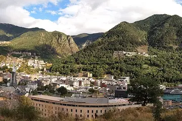 | Andorra la Vella (Andorra) | Andorra la Vella | Tiia Monto | CC BY-SA 3.0 |
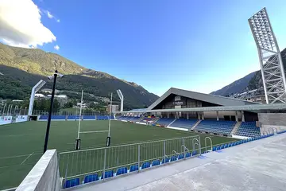 | Andorra la Vella (Andorra) | Estadi Nacional | Walmaul | CC BY-SA 4.0 |
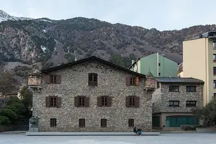 | Andorra la Vella (Andorra) | Casa de la Vall | Diego Delso | CC BY-SA 3.0 |
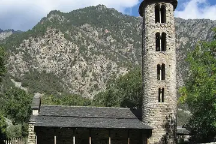 | Andorra la Vella (Andorra) | església de Santa Coloma d'Andorra | Simonjoan (changes by Rabanus Flavus) | CC BY-SA 3.0 |
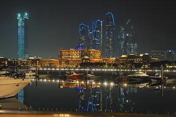 | Abu Dhabi (United Arab Emirates) | Abu Dhabi | Валерий Дед | CC BY 3.0 |
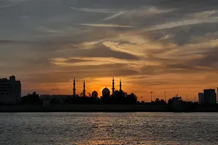 | Abu Dhabi (United Arab Emirates) | Sheikh Zayed Mosque | PotatoWitch | CC BY-SA 4.0 |
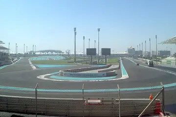 | Abu Dhabi (United Arab Emirates) | Yas Marina Circuit | Pi3.124 | CC BY-SA 3.0 |
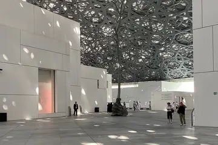 | Abu Dhabi (United Arab Emirates) | Louvre Abu Dhabi | Boubloub | CC BY-SA 4.0 |
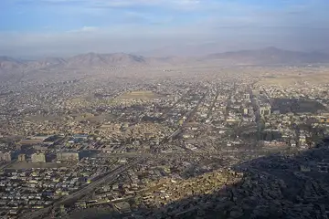 | Kabul (Afghanistan) | Kabul | Sven Dirks, Wien | CC BY-SA 3.0 |
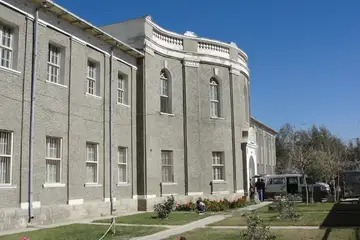 | Kabul (Afghanistan) | National Museum of Afghanistan | Michal Hvorecky from Slovak Republic | CC BY 2.0 |
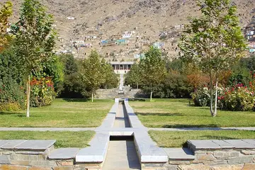 | Kabul (Afghanistan) | Gardens of Babur | Jim Kelly | CC BY 2.0 |
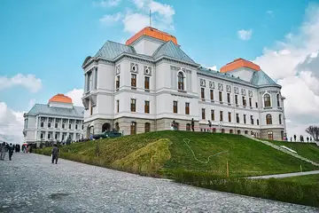 | Kabul (Afghanistan) | Darul Aman Palace | Qasimmirzaie | CC BY 4.0 |
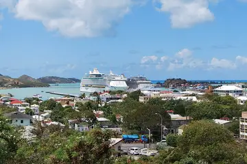 | St. John's (Antigua and Barbuda) | St. John's | This image or media was taken or created by Matt H. Wade. To see his entire portfolio, click here.@thatmattwade This image is protected by copyright! If you would like to use it, please read this first. | CC BY-SA 3.0 |
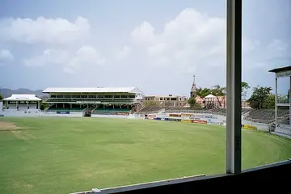 | St. John's (Antigua and Barbuda) | Antigua Recreation Ground | Z_dead from London, UK | CC BY 2.0 |
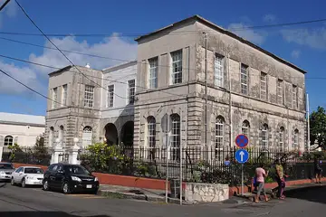 | St. John's (Antigua and Barbuda) | Museum of Antigua and Barbuda | JERRYE & ROY KLOTZ MD | CC BY-SA 3.0 |
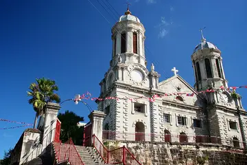 | St. John's (Antigua and Barbuda) | St. John's Cathedral | D'Arcy Norman | CC BY 2.0 |
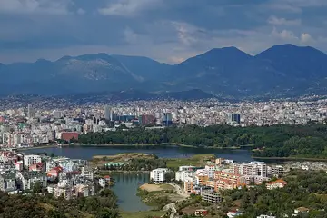 | Tirana (Albania) | Tirana | Albinfo | CC BY-SA 3.0 |
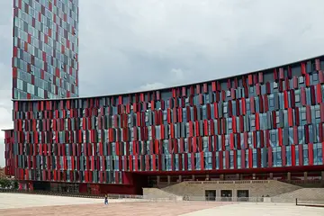 | Tirana (Albania) | Air Albania Stadium | Albinfo | CC BY 4.0 |
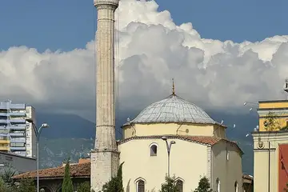 | Tirana (Albania) | Et'hem Bey Mosque | Pudelek | CC BY-SA 4.0 |
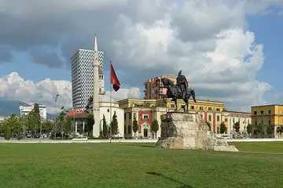 | Tirana (Albania) | Skanderbeg Square | Pudelek | CC BY-SA 4.0 |
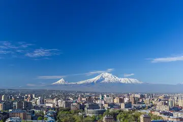 | Yerevan (Armenia) | Yerevan | Սէրուժ Ուրիշեան (Serouj Ourishian) | CC BY 4.0 |
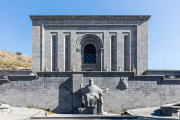 | Yerevan (Armenia) | Matenadaran | Diego Delso | CC BY-SA 4.0 |
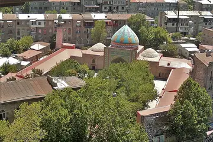 | Yerevan (Armenia) | Blue Mosque | Armineaghayan | CC BY-SA 4.0 |
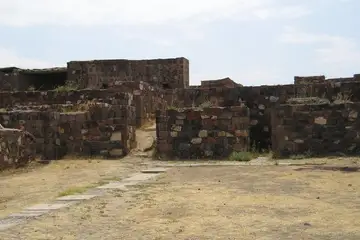 | Yerevan (Armenia) | Erebuni Fortress | Unknown author | Public domain |
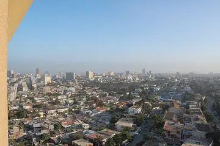 | Luanda (Angola) | Luanda | Lars Rohwer | CC BY-SA 3.0 |
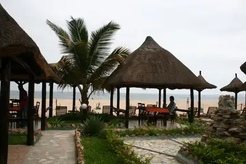 | Luanda (Angola) | Ilha de Luanda | Paulo César Santos | CC0 |
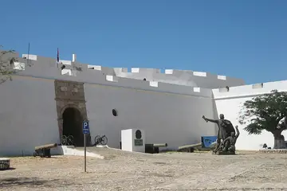 | Luanda (Angola) | Fortress of São Miguel | Erik Cleves Kristensen | CC BY 2.0 |
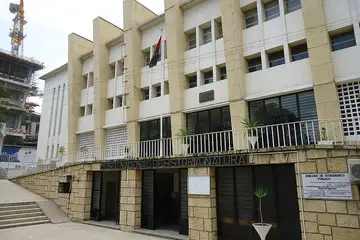 | Luanda (Angola) | Museu Nacional de História Natural de Angola | Fabio Vanin | CC BY-SA 3.0 |
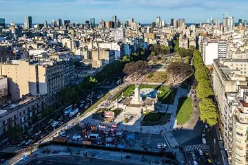 | Buenos Aires (Argentina) | Buenos Aires | ProtoplasmaKid | CC BY-SA 4.0 |
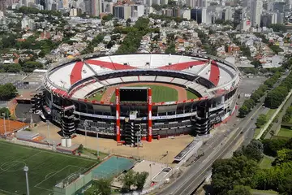 | Buenos Aires (Argentina) | Monumental Stadium, Buenos Aires | Fulviusbsas | CC BY-SA 4.0 |
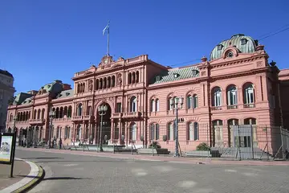 | Buenos Aires (Argentina) | Casa Rosada | Dragan | CC BY 3.0 |
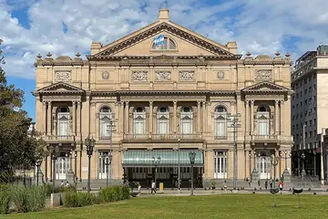 | Buenos Aires (Argentina) | Colón Theater | EEJCC | CC0 |
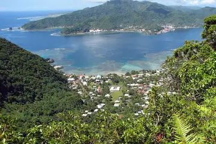 | Pago Pago (American Samoa) | Pago Pago | Tavita Togia, National Park Service | Public domain |
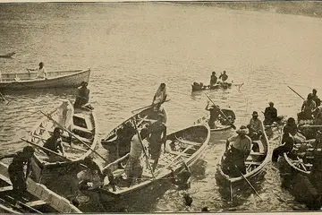 | Pago Pago (American Samoa) | Pago Pago | Internet Archive Book Images | No restrictions |
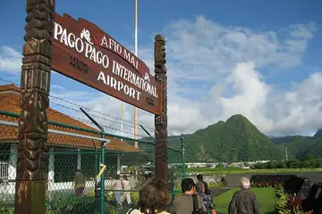 | Pago Pago (American Samoa) | Pago Pago | Peter Gill / UK | CC BY 3.0 |
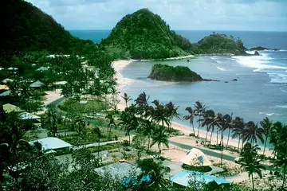 | Pago Pago (American Samoa) | Pago Pago | NOAA | Public domain |
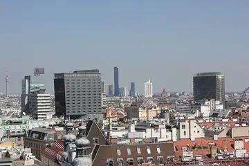 | Vienna (Austria) | Vienna | Andrzej Otrębski | CC BY-SA 4.0 |
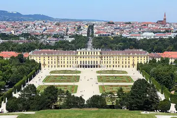 | Vienna (Austria) | Schönbrunn Palace | C.Stadler/Bwag | CC BY-SA 4.0 |
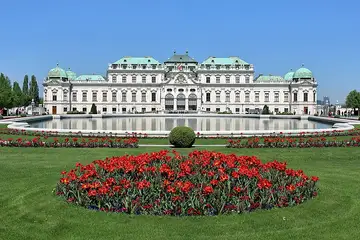 | Vienna (Austria) | Belvedere | C.Stadler/Bwag | CC BY-SA 4.0 |
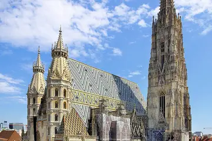 | Vienna (Austria) | St. Stephen's Cathedral | C.Stadler/Bwag | CC BY-SA 4.0 |
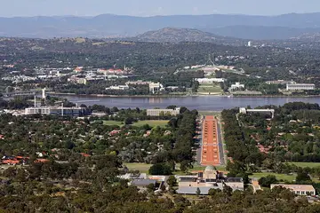 | Canberra (Australia) | Canberra | Tim J Keegan from Lake Macquarie, Australia | CC BY-SA 2.0 |
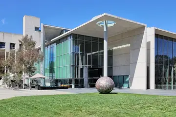 | Canberra (Australia) | National Gallery of Australia | Thennicke | CC BY-SA 4.0 |
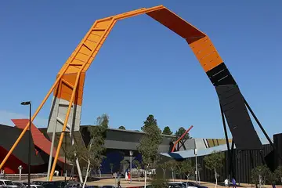 | Canberra (Australia) | National Museum of Australia | Myk Dowling | CC BY-SA 3.0 |
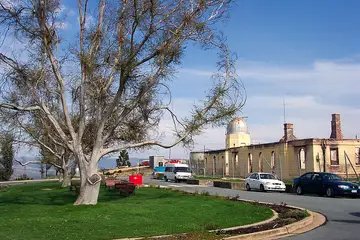 | Canberra (Australia) | Mount Stromlo Observatory | Unknown author | CC BY-SA 3.0 |
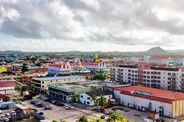 | Oranjestad (Aruba) | Oranjestad | Bgabel | CC BY-SA 3.0 |
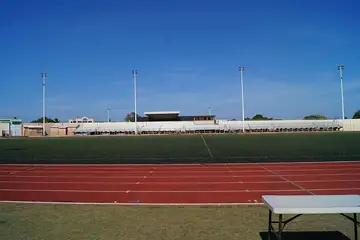 | Oranjestad (Aruba) | Guillermo Prospero Trinidad Stadium | Xrevbc | CC BY-SA 4.0 |
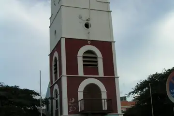 | Oranjestad (Aruba) | Fort Zoutman | sectionz | CC BY 2.0 |
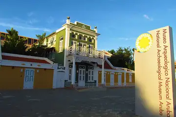 | Oranjestad (Aruba) | Archaeological Museum of Aruba | Isbelia90 | CC BY-SA 4.0 |
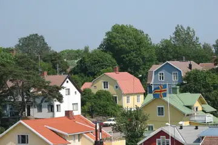 | Mariehamn (Åland Islands) | Mariehamn | The original uploader was Metallyza at French Wikipedia. | CC BY-SA 3.0 |
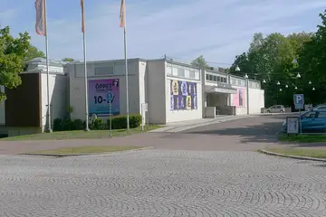 | Mariehamn (Åland Islands) | Åland Museum | Erik Wannee | CC BY-SA 4.0 |
| Mariehamn (Åland Islands) | Wiklöf Holding Arena | Juhm | CC BY-SA 4.0 | |
| Mariehamn (Åland Islands) | Pommern | uwezi | Public domain | |
| Baku (Azerbaijan) | Baku | Ludvig14 | CC BY-SA 4.0 | |
| Baku (Azerbaijan) | Palace of the Shirvanshahs | Bruno Girin | CC BY-SA 2.0 | |
| Baku (Azerbaijan) | Old City of Baku | Interfase | Public domain | |
| Baku (Azerbaijan) | Maiden Tower | Ludvig14 | CC BY-SA 4.0 | |
| Sarajevo (Bosnia and Herzegovina) | Sarajevo | Julian Nyča | CC BY-SA 4.0 | |
| Sarajevo (Bosnia and Herzegovina) | Gazi Husrev-beg Mosque | Bjoertvedt | CC BY-SA 3.0 | |
| Sarajevo (Bosnia and Herzegovina) | Emperor's Mosque | Julian Nyča | CC BY-SA 3.0 | |
| Sarajevo (Bosnia and Herzegovina) | Sarajevo Tunnel | Baumi | CC BY-SA 3.0 | |
| Bridgetown (Barbados) | Bridgetown | P.Lechien | CC0 | |
| Bridgetown (Barbados) | Kensington Oval | subzi73 | CC BY 2.0 | |
| Bridgetown (Barbados) | Nidhe Israel Synagogue | NYC2TLV | CC BY-SA 3.0 | |
| Bridgetown (Barbados) | Bridgetown Heliport | CaribDigita | Public domain | |
| Dhaka (Bangladesh) | Dhaka | Tanweer drmc | Public domain | |
| Dhaka (Bangladesh) | Baitul Mukarram National Mosque | আহসান হাবীব | CC BY-SA 3.0 | |
| Dhaka (Bangladesh) | Jatiya Sangsad Bhaban | MD SAIFUL AMIN | CC BY-SA 4.0 | |
| Dhaka (Bangladesh) | Lalbagh Fort | No machine-readable author provided. Shmunmun assumed (based on copyright claims). | Public domain | |
| Brussels (Belgium) | Brussels | Ank Kumar | CC BY-SA 4.0 | |
| Brussels (Belgium) | Grand-Place | VitVit | CC BY-SA 4.0 | |
| Brussels (Belgium) | Atomium | Zairon | CC BY-SA 4.0 | |
| Brussels (Belgium) | King Baudouin Stadium | Joni-Fuego | CC BY-SA 3.0 | |
| Ouagadougou (Burkina Faso) | Ouagadougou | The black photographer | CC0 | |
| Ouagadougou (Burkina Faso) | Stade du 4 Août | ChéRatou | CC0 | |
| Ouagadougou (Burkina Faso) | Musée de la musique de Ouagadougou | GranCastor | CC BY-SA 4.0 | |
| Ouagadougou (Burkina Faso) | Maison du Peuple | Sputniktilt | CC BY-SA 3.0 | |
| Sofia (Bulgaria) | Sofia | Deensel | CC BY 2.0 | |
| Sofia (Bulgaria) | Alexander Nevsky Cathedral | DRNRMRZ | CC BY 4.0 | |
| Sofia (Bulgaria) | Boyana Church | Todor Bozhinov / Тодор Божинов | CC BY-SA 3.0 | |
| Sofia (Bulgaria) | Vasil Levski National Stadium | JukoFF | CC BY-SA 4.0 | |
| Manama (Bahrain) | Manama | B.alotaby | CC BY-SA 4.0 | |
| Manama (Bahrain) | Al Fateh Grand Mosque | أبو الشاي حليب | CC BY-SA 4.0 | |
| Manama (Bahrain) | Bahrain National Museum | Anthony DeCosta | CC BY 2.0 | |
| Manama (Bahrain) | Pearl Roundabout | http://bahrain.viewbook.com | CC BY-SA 3.0 | |
| Gitega (Burundi) | Gitega | NIHEREWENIMANA Richard | CC0 | |
| Gitega (Burundi) | Gitega | No machine-readable author provided. Tequendamia assumed (based on copyright claims). | Public domain | |
| Gitega (Burundi) | National Museum of Gitega | Dave Proffer | CC BY 2.0 | |
| Gitega (Burundi) | Christ the King Cathedral | No machine-readable author provided. Tequendamia assumed (based on copyright claims). | Public domain | |
| Porto-Novo (Benin) | Porto-Novo | Élisée.Adad | CC BY-SA 4.0 | |
| Porto-Novo (Benin) | Stade Charles de Gaulle | Sdansou | CC BY-SA 4.0 | |
| Porto-Novo (Benin) | Royal Palace Museum | Dominik Schwarz | CC BY-SA 3.0 | |
| Porto-Novo (Benin) | Alexandre Sènou Adandé Ethnographic Museum | Kulttuurinavigaattori | CC BY-SA 4.0 | |
| Hamilton (Bermuda) | Hamilton | JoeyBagODonuts | CC BY-SA 3.0 | |
| Hamilton (Bermuda) | Cathedral of the Most Holy Trinity | Unknown author | CC BY-SA 3.0 | |
| Hamilton (Bermuda) | Cathedral of Saint Theresa of Lisieux | Concord | CC BY-SA 3.0 | |
| Hamilton (Bermuda) | Victoria Park, Hamilton, Bermuda | Grakoos | CC BY-SA 3.0 | |
| Bandar Seri Begawan (Brunei) | Bandar Seri Begawan | sam garza from Los Angeles, USA | CC BY 2.0 | |
| Bandar Seri Begawan (Brunei) | Omar Ali Saifuddien Mosque | Daniel Weiss | CC BY-SA 3.0 | |
| Bandar Seri Begawan (Brunei) | Istana Nurul Iman | de:Benutzer:Chtrede | CC BY-SA 3.0 de | |
| Bandar Seri Begawan (Brunei) | Hassanal Bolkiah National Stadium | Pudt | Copyrighted free use | |
| Sucre (Bolivia) | Sucre | Parallelepiped09 | CC BY-SA 4.0 | |
| Sucre (Bolivia) | Juana Azurduy de Padilla International Airport | Marcualico | CC BY-SA 3.0 | |
| Sucre (Bolivia) | Estadio Olímpico Patria | Charly102689 | CC BY-SA 4.0 | |
| Sucre (Bolivia) | House of Freedom | Jimmy Gilles (Anakin) | CC BY-SA 3.0 | |
| Brasília (Brazil) | Brasília | Arturdiasr | CC BY-SA 4.0 | |
| Brasília (Brazil) | Estádio Nacional de Brasília | Arne Müseler | CC BY-SA 3.0 de | |
| Brasília (Brazil) | Palácio do Planalto | Michel Temer | CC BY 2.0 | |
| Brasília (Brazil) | Cathedral of Brasília | Mariordo (Mario Roberto Durán Ortiz) | CC BY-SA 4.0 | |
| Nassau (Bahamas) | Nassau | Der-wuppertaler | CC BY-SA 3.0 | |
| Nassau (Bahamas) | Thomas Robinson Stadium | Iles du francois | CC0 | |
| Nassau (Bahamas) | Compass Point Studios | Christine Puccio from Oakland | CC BY-SA 2.0 | |
| Nassau (Bahamas) | Fort Montagu | Oscar Flowers | CC BY-SA 3.0 | |
| Thimphu (Bhutan) | Thimphu | Gerd Eichmann | CC BY-SA 4.0 | |
| Thimphu (Bhutan) | Changlimithang Stadium | Steve Evans from Bangalore, India | CC BY 2.0 | |
| Thimphu (Bhutan) | Tashichho Dzong | Christopher J. Fynn | CC BY 2.5 | |
| Thimphu (Bhutan) | Simtokha Dzong | Bernard Gagnon | CC BY-SA 4.0 | |
| Gaborone (Botswana) | Gaborone | Njengabenngugi | CC BY-SA 4.0 | |
| Gaborone (Botswana) | Botswana National Stadium | US Army Africa from Vicenza, Italy | CC BY 2.0 | |
| Gaborone (Botswana) | Botswana National Museum | CNJerem | CC BY 4.0 | |
| Gaborone (Botswana) | Christ the King Cathedral | CNJerem | CC BY 4.0 | |
| Minsk (Belarus) | Minsk | Zedlik | CC BY-SA 3.0 | |
| Minsk (Belarus) | Minsk-Arena | Roman Minsk | CC BY-SA 3.0 | |
| Minsk (Belarus) | Dinamo Stadium | Homoatrox | CC BY-SA 4.0 | |
| Minsk (Belarus) | Church of Saints Simon and Helena | KpokeJlJla | CC BY-SA 4.0 | |
| Belmopan (Belize) | Belmopan | Haakon S. Krohn | CC BY-SA 3.0 | |
| Belmopan (Belize) | FFB Stadium | GatoCR84 | CC BY-SA 4.0 | |
| Belmopan (Belize) | Belmopan | Pgbk87 | CC BY-SA 3.0 | |
| Belmopan (Belize) | Belmopan | Haakon S. Krohn | CC BY-SA 3.0 | |
| Ottawa (Canada) | National Gallery of Canada | – Wladyslaw [Disk.] | CC BY-SA 3.0 | |
| Ottawa (Canada) | Carleton University | Harleyd613 | CC BY-SA 4.0 | |
| Ottawa (Canada) | Canadian Tire Centre | Ontario Images | CC BY-SA 4.0 | |
| Ottawa (Canada) | Canadian Museum of Nature | RealGrouchy | Public domain | |
| Kinshasa (DR Congo) | Kinshasa | Garcia-Pavilion | CC BY-SA 4.0 | |
| Kinshasa (DR Congo) | Palace of the Nation | Self | Public domain | |
| Kinshasa (DR Congo) | Stade Tata Raphaël | Yallahbye | CC BY-SA 4.0 | |
| Kinshasa (DR Congo) | National Museum of the Democratic Republic of Congo | Munfarid1 | CC BY-SA 4.0 | |
| Bangui (Central African Republic) | Bangui | Alllexxxis | CC BY-SA 4.0 | |
| Bangui (Central African Republic) | Cathédrale Notre-Dame | Freeman Sipila (VOA) | Public domain | |
| Bangui (Central African Republic) | Church of Fatima, Bangui | © UNICEF | Pierre Holtz/hdptcar, Bangui, Central African Republic | CC BY-SA 2.0 | |
| Bangui (Central African Republic) | Bangui Town Hall | Unknown authorUnknown author | CC0 | |
| Brazzaville (Republic of the Congo) | Brazzaville | Prével EPOTA | CC BY-SA 4.0 | |
| Brazzaville (Republic of the Congo) | Brazzaville | Detsed1 | CC BY-SA 4.0 | |
| Brazzaville (Republic of the Congo) | Nabemba Tower | Leon Bilili | CC BY-SA 4.0 | |
| Brazzaville (Republic of the Congo) | Stade Municipal de Kintélé | Apipo1907 (talk) | CC BY-SA 4.0 | |
| Bern (Switzerland) | Wankdorf Stadium | Twenty-nine at de.wikipedia | Public domain | |
| Bern (Switzerland) | Federal Palace of Switzerland | Flooffy | CC BY 2.0 | |
| Bern (Switzerland) | Zytglogge | Mike Lehmann, Mike Switzerland 13:37, 2 July 2006 (UTC) | CC BY-SA 3.0 | |
| Bern (Switzerland) | Kunstmuseum Bern | Photo: Andreas Praefcke | CC BY 3.0 | |
| Yamoussoukro (Ivory Coast) | Yamoussoukro | HONORE BOSSON | CC BY-SA 4.0 | |
| Yamoussoukro (Ivory Coast) | Basilica of Our Lady of Peace of Yamoussoukro | Didierwiki | CC0 | |
| Yamoussoukro (Ivory Coast) | Charles Konan Banny Stadium | HONORE BOSSON | CC BY-SA 4.0 | |
| Yamoussoukro (Ivory Coast) | Yamoussoukro | WILLAV-FR | CC BY-SA 4.0 | |
| Avarua (Cook Islands) | Avarua | Nurg | CC BY-SA 4.0 | |
| Avarua (Cook Islands) | St. Joseph's Cathedral, Avarua | Tom Ackroyd | CC BY-SA 4.0 | |
| Avarua (Cook Islands) | Para O Tane Palace | davehighbury | CC BY-SA 2.0 | |
| Avarua (Cook Islands) | Avarua | davehighbury | CC BY-SA 2.0 | |
| Santiago (Chile) | Santiago | Omnespsx (D•ES) | CC BY-SA 4.0 | |
| Santiago (Chile) | Gran Torre Costanera | Basilicofresco | CC BY-SA 4.0 | |
| Santiago (Chile) | Estadio Monumental (Chile) | Carlos yo | CC BY-SA 4.0 | |
| Santiago (Chile) | Chilean Museum of Pre-Columbian Art | Carlos yo | CC BY-SA 4.0 | |
| Yaoundé (Cameroon) | Yaoundé | Bdx | CC BY-SA 4.0 | |
| Yaoundé (Cameroon) | Stade Ahmadou Ahidjo | Kondah | CC BY-SA 4.0 | |
| Yaoundé (Cameroon) | Paul Biya Stadium | Score Beethoven | CC BY-SA 4.0 | |
| Yaoundé (Cameroon) | Our Lady of Victories Cathedral, Yaoundé | Unknown author | Public domain | |
| Beijing (China) | Beijing | N509FZ | CC BY-SA 4.0 | |
| Beijing (China) | Forbidden City | N509FZ | CC BY-SA 4.0 | |
| Beijing (China) | Tiananmen Square | N509FZ | CC BY-SA 4.0 | |
| Beijing (China) | Temple of Heaven | Shujianyang | CC BY-SA 4.0 | |
| Bogotá (Colombia) | Bogotá | Felipe Restrepo Acosta | CC BY-SA 3.0 | |
| Bogotá (Colombia) | Gold Museum | Felipe Restrepo Acosta | CC BY-SA 3.0 | |
| Bogotá (Colombia) | Estadio El Campín | Futbolero | CC BY-SA 4.0 | |
| Bogotá (Colombia) | Primary Cathedral of Bogotá | Felipe Restrpo Acosta | CC BY-SA 4.0 | |
| San José (Costa Rica) | San José | Xlionheartx | CC BY 3.0 | |
| San José (Costa Rica) | Estadio Nacional de Costa Rica | MadriCR | CC BY-SA 4.0 | |
| San José (Costa Rica) | National Museum of Costa Rica | Fespinozalemistre | CC BY-SA 4.0 | |
| San José (Costa Rica) | National Theatre of Costa Rica | Mariordo ((Mario Roberto Durán Ortiz) | CC BY-SA 4.0 | |
| Havana (Cuba) | Havana | Christopher Michel | CC BY 2.0 | |
| Havana (Cuba) | Havana Cathedral | Velvet | CC BY-SA 4.0 | |
| Havana (Cuba) | El Capitolio | Carlos Jordi, Havana (publisher) | Public domain | |
| Havana (Cuba) | San Carlos de la Cabaña Fortress | Mariordo | CC BY-SA 3.0 | |
| Praia (Cape Verde) | Praia | Xandu | Public domain | |
| Praia (Cape Verde) | Estádio Pelé | Dablue | CC BY-SA 4.0 | |
| Praia (Cape Verde) | Estádio da Várzea | Xandu | Public domain | |
| Praia (Cape Verde) | Museu Etnográfico da Praia | Ji-Elle | CC BY-SA 3.0 | |
| Willemstad (Curaçao) | Willemstad | Coolcaesar | CC BY 4.0 | |
| Willemstad (Curaçao) | Ergilio Hato Stadium | Burgbernd | CC BY-SA 3.0 | |
| Willemstad (Curaçao) | Curaçao synagogue | Dolly442 | CC BY-SA 3.0 | |
| Willemstad (Curaçao) | Queen Juliana Bridge | Hullie at Dutch Wikipedia | CC BY-SA 3.0 | |
| Nicosia (Cyprus) | Nicosia | A.Savin | FAL | |
| Nicosia (Cyprus) | Saint Sophia Cathedral | A.Savin | FAL | |
| Nicosia (Cyprus) | Büyük Han | Diego Delso | CC BY-SA 4.0 | |
| Nicosia (Cyprus) | Venetian walls of Nicosia | AncientNicosia | CC BY-SA 3.0 | |
| Prague (Czechia) | Prague | Deror_avi | CC BY-SA 4.0 | |
| Prague (Czechia) | Prague Castle | Diego Delso | CC BY-SA 4.0 | |
| Prague (Czechia) | Charles Bridge | A.Savin | FAL | |
| Prague (Czechia) | St. Vitus Cathedral | o¬. | CC BY 2.0 | |
| Berlin (Germany) | Berlin | Thomas Wolf, www.foto-tw.de | CC BY-SA 3.0 | |
| Berlin (Germany) | Brandenburg Gate | Thomas Wolf, www.foto-tw.de | CC BY-SA 3.0 | |
| Berlin (Germany) | Reichstag | Jörg Braukmann | CC BY-SA 4.0 | |
| Berlin (Germany) | Berlin Olympic Stadium | Thomas Wolf, www.foto-tw.de | CC BY-SA 3.0 de | |
| Djibouti (Djibouti) | Djibouti | Skilla1st | CC BY-SA 3.0 | |
| Djibouti (Djibouti) | Stade du Ville | Skilla1st | CC BY-SA 4.0 | |
| Djibouti (Djibouti) | Hamoudi Mosque | Francisco Anzola | CC BY 3.0 | |
| Djibouti (Djibouti) | Abdülhamid II Mosque | Skilla1st | CC BY-SA 4.0 | |
| Copenhagen (Denmark) | Copenhagen | Pudelek | CC BY-SA 4.0 | |
| Copenhagen (Denmark) | Garrison Hospital (Copenhagen) | Leif Jørgensen | CC BY-SA 4.0 | |
| Copenhagen (Denmark) | Copenhagen | Moahim | CC BY-SA 4.0 | |
| Copenhagen (Denmark) | Copenhagen | kallerna | CC BY-SA 4.0 | |
| Roseau (Dominica) | Roseau | Ted Rufus Ross | CC BY 2.5 | |
| Roseau (Dominica) | Windsor Park | SDGibbons | Public domain | |
| Roseau (Dominica) | Roseau Cathedral | Nelro (talk) | Public domain | |
| Roseau (Dominica) | Old Market of Roseau | Christian Frausto Bernal from Tepic, Nayarit, MEXICO | CC BY-SA 2.0 | |
| Santo Domingo (Dominican Republic) | Santo Domingo | Jjc09 | Public domain | |
| Santo Domingo (Dominican Republic) | Fortaleza Ozama | Mariordo (Mario Roberto Durán Ortiz) | CC BY-SA 4.0 | |
| Santo Domingo (Dominican Republic) | Columbus Lighthouse | Jefry Lagrange Reyes | GPL | |
| Santo Domingo (Dominican Republic) | Palacio Nacional | Jean-Marc Astesana from Voisins le Bretonneux, France | CC BY-SA 2.0 | |
| Algiers (Algeria) | Algiers | LBM1948 | CC BY-SA 4.0 | |
| Algiers (Algeria) | Ketchaoua Mosque | Rachid Hamatou | CC BY-SA 4.0 | |
| Algiers (Algeria) | Djamaa El Kebir of Algiers | Brahimpic | CC BY-SA 3.0 | |
| Algiers (Algeria) | Basilica of Notre-Dame-d'Afrique | Magharebia | CC BY 2.0 | |
| Quito (Ecuador) | Quito | Asamblea Nacional del Ecuador | CC BY-SA 2.0 | |
| Quito (Ecuador) | Estadio Olímpico Atahualpa | Agencia de Noticias ANDES | CC BY-SA 2.0 | |
| Quito (Ecuador) | Carondelet Palace | Taty2007 | CC BY 3.0 | |
| Quito (Ecuador) | Cathedral of Quito | Ángel M. Felicísimo | CC BY-SA 4.0 | |
| Tallinn (Estonia) | Tallinn | Hiiumaamudeliklubi | CC BY-SA 4.0 | |
| Tallinn (Estonia) | Banned Books Museum | Fuzheado | CC0 | |
| Tallinn (Estonia) | Tallinn | Ralf Roletschek | FAL | |
| Tallinn (Estonia) | Tallinn | Alexey Bogolyubov | Public domain | |
| Cairo (Egypt) | Cairo | Faris El-Gwely | CC BY 4.0 | |
| Cairo (Egypt) | Egyptian Museum | Holger Uwe Schmitt | CC BY-SA 4.0 | |
| Cairo (Egypt) | Tahrir Square | Waelmansoory | CC BY-SA 4.0 | |
| Cairo (Egypt) | Mosque of Ibn Tulun | User:Berthold Werner | CC BY 3.0 | |
| Asmara (Eritrea) | Asmara | sailko | CC BY-SA 3.0 | |
| Asmara (Eritrea) | Great Mosque of Asmara | David Stanley from Nanaimo, Canada | CC BY 2.0 | |
| Asmara (Eritrea) | Fiat Tagliero Building | sailko | CC BY-SA 3.0 | |
| Asmara (Eritrea) | Cinema Impero | sailko | CC BY-SA 3.0 | |
| Madrid (Spain) | Madrid | Dmitry Dzhus from London | CC BY 2.0 | |
| Madrid (Spain) | Bernabéu | Zoser | CC BY 4.0 | |
| Madrid (Spain) | Museo del Prado | Emilio J. Rodríguez Posada | CC BY-SA 2.0 | |
| Madrid (Spain) | Metropolitano Stadium | Fernandopascullo | CC BY-SA 4.0 | |
| Addis Ababa (Ethiopia) | Addis Ababa | DaneyWiki | CC BY-SA 4.0 | |
| Addis Ababa (Ethiopia) | Addis Ababa Stadium | A.Savin | FAL | |
| Addis Ababa (Ethiopia) | National Museum of Ethiopia | Richard van Alphen | Public domain | |
| Addis Ababa (Ethiopia) | St. George's Cathedral | Ondřej Žváček | CC BY 2.5 | |
| Helsinki (Finland) | Helsinki | Old Pionear | CC BY-SA 4.0 | |
| Helsinki (Finland) | Suomenlinna | Michal Pise, Michal.Pise | CC BY 2.0 | |
| Helsinki (Finland) | Helsinki Cathedral | Hans Hillewaert | CC BY-SA 3.0 | |
| Helsinki (Finland) | Helsinki Olympic Stadium | Ximonic (Simo Räsänen) | CC BY-SA 4.0 | |
| Suva (Fiji) | Suva | Maksym Kozlenko | CC BY-SA 4.0 | |
| Suva (Fiji) | HFC Bank Stadium | Stemoc | CC BY-SA 3.0 | |
| Suva (Fiji) | Fiji Museum | Yuko Hara from Yokohama, Japan | CC BY 2.0 | |
| Suva (Fiji) | Sacred Heart Cathedral, Suva | Stemoc | CC0 | |
| Stanley (Falkland Islands) | Stanley | Unknown author | CC BY-SA 3.0 | |
| Stanley (Falkland Islands) | Christ Church Cathedral | Travellers & Tinkers | CC BY-SA 3.0 | |
| Stanley (Falkland Islands) | Falkland Islands Museum and National Trust | David Stanley from Nanaimo, Canada | CC BY 2.0 | |
| Stanley (Falkland Islands) | Government House | michael clarke stuff | CC BY-SA 2.0 | |
| Tórshavn (Faroe Islands) | Tórshavn | Stig Nygaard from Copenhagen, Denmark | CC BY 2.0 | |
| Tórshavn (Faroe Islands) | Tórshavn | Erik Christensen | CC BY-SA 3.0 | |
| Tórshavn (Faroe Islands) | Tórshavn | Vincent van Zeijst | CC BY-SA 3.0 | |
| Tórshavn (Faroe Islands) | Tórshavn | Eileen Sandá | CC BY-SA 3.0 | |
| Paris (France) | Paris | Yann Caradec from Paris, France | CC BY-SA 2.0 | |
| Paris (France) | Eiffel Tower | Benh LIEU SONG | Public domain | |
| Paris (France) | Louvre Museum | Benh LIEU SONG | CC BY 2.5 | |
| Paris (France) | Notre-Dame de Paris | P e z i | CC BY-SA 3.0 | |
| Libreville (Gabon) | Libreville | Global Photographer | CC BY-SA 3.0 | |
| Libreville (Gabon) | Stade d'Angondjé | Ben Sutherland from Crystal Palace, London, UK | CC BY 2.0 | |
| Libreville (Gabon) | Libreville Notre-Dame-de-l'Assomption Cathedral | David Stanley from Nanaimo, Canada | CC BY 2.0 | |
| Libreville (Gabon) | Libreville Hospital | Allmania23 | CC BY-SA 4.0 | |
| London (United Kingdom) | London | Ilya Grigorik | CC BY-SA 3.0 | |
| London (United Kingdom) | Buckingham Palace | Diliff | CC BY-SA 3.0 | |
| London (United Kingdom) | Westminster Abbey | Σπάρτακος | CC BY-SA 3.0 | |
| London (United Kingdom) | Big Ben | Christian David | CC BY-SA 4.0 | |
| St. George's (Grenada) | St. George's | P. Hughes | CC BY-SA 4.0 | |
| St. George's (Grenada) | National Cricket Stadium | Madmack | CC BY 2.0 | |
| St. George's (Grenada) | Immaculate Conception Cathedral | Anneli Salo | CC BY-SA 3.0 | |
| St. George's (Grenada) | New Parliament Building | ZJREYN | CC BY-SA 4.0 | |
| Tbilisi (Georgia) | Tbilisi | Alexey Komarov | CC BY-SA 4.0 | |
| Tbilisi (Georgia) | Dinamo Arena | Emin Allahverdi | CC BY-SA 4.0 | |
| Tbilisi (Georgia) | Holy Trinity Cathedral of Tbilisi | Alexxx1979 | CC BY-SA 4.0 | |
| Tbilisi (Georgia) | Rustaveli Theatre | DDohler | CC BY 2.0 | |
| Saint Peter Port (Guernsey) | Saint Peter Port | AlanFord at English Wikipedia | Public domain | |
| Saint Peter Port (Guernsey) | Castle Cornet | TheKaphox | CC0 | |
| Saint Peter Port (Guernsey) | Hauteville House | Pymouss | CC BY-SA 4.0 | |
| Saint Peter Port (Guernsey) | Our Lady of the Rosary Church, Saint Peter Port | Pymouss | CC BY-SA 4.0 | |
| Accra (Ghana) | Accra | Goldenwabbit | CC BY-SA 4.0 | |
| Accra (Ghana) | Black Star Gate | David Stanley from Nanaimo, Canada | CC BY 2.0 | |
| Accra (Ghana) | Fort James | Synth85 | CC BY-SA 4.0 | |
| Accra (Ghana) | Accra Academy | Osy | CC BY-SA 3.0 | |
| Gibraltar (Gibraltar) | Gibraltar | Steve | CC BY-SA 2.0 | |
| Gibraltar (Gibraltar) | Ibrahim-al-Ibrahim Mosque | Atiemann at English Wikipedia | Public domain | |
| Gibraltar (Gibraltar) | Victoria Stadium | Malcolm Tredinnick | CC BY 2.0 | |
| Gibraltar (Gibraltar) | Moorish Castle | James Cridland from London, UK | CC BY 2.0 | |
| Nuuk (Greenland) | Nuuk | patano | CC BY-SA 3.0 | |
| Nuuk (Greenland) | Blok P | Vincent van Zeijst | CC BY-SA 3.0 | |
| Nuuk (Greenland) | Nuuk | Snoopy 31 | CC BY-SA 4.0 | |
| Nuuk (Greenland) | Nuuk | Svickova | Public domain | |
| Banjul (Gambia) | Banjul | IsaacTuray | CC0 | |
| Banjul (Gambia) | Box Bar Stadium | Atamari | CC BY-SA 3.0 | |
| Banjul (Gambia) | Arch 22 | Atamari | CC BY-SA 3.0 | |
| Banjul (Gambia) | Our Lady of the Assumption Cathedral, Banjul | uploader Atamari has eMail-contact with the photograph „sachara“ | CC BY-SA 3.0 | |
| Conakry (Guinea) | Conakry | Alpha hmd | CC BY-SA 4.0 | |
| Conakry (Guinea) | Grand Mosque of Conakry | Ourysow92 | CC BY-SA 4.0 | |
| Conakry (Guinea) | Stade du 28 Septembre | Jeff Attaway from Abuja, Nigeria | CC BY 2.0 | |
| Conakry (Guinea) | Palais du Peuple | Unknown author | CC BY 2.5 | |
| Malabo (Equatorial Guinea) | Malabo | Ipisking at English Wikipedia | CC BY-SA 3.0 | |
| Malabo (Equatorial Guinea) | Malabo Stadium | Tadpolefarmer at English Wikipedia | Public domain | |
| Malabo (Equatorial Guinea) | St. Elisabeth Cathedral | Denis Barthel | CC BY-SA 3.0 | |
| Malabo (Equatorial Guinea) | Miniterio de Asuntos Exteriores y Cooperación building | Ministerio de Asuntos Exteriores y Cooperación en Facebook | CC BY-SA 4.0 | |
| Athens (Greece) | Athens | Thomas Wolf, www.foto-tw.de | CC BY-SA 3.0 de | |
| Athens (Greece) | Numismatic Museum of Athens | C messier | CC BY-SA 4.0 | |
| Athens (Greece) | Hekatompedon temple | Hermann Luckenbach | Public domain | |
| Athens (Greece) | Older Parthenon | Maxime Collignon | Public domain | |
| Guatemala City (Guatemala) | Guatemala City | BladimiroAlvarado | CC BY-SA 4.0 | |
| Guatemala City (Guatemala) | Estadio Doroteo Guamuch Flores | JMRAFFi | CC BY-SA 4.0 | |
| Guatemala City (Guatemala) | Torre del Reformador | Steve Rice | CC BY 2.5 | |
| Guatemala City (Guatemala) | Cathedral of Guatemala City | Fernando Reyes Palencia from Guatemala, Guatemala | CC BY-SA 2.0 | |
| Hagåtña (Guam) | Hagåtña | Abasaa | Public domain | |
| Hagåtña (Guam) | Dulce Nombre de Maria Cathedral Basilica | Abasaa | Public domain | |
| Hagåtña (Guam) | Agana Spanish Bridge | Daderot | CC0 | |
| Hagåtña (Guam) | Fort Santa Agueda | Abasaa | Public domain | |
| Bissau (Guinea-Bissau) | Bissau | jbdodane | CC BY 2.0 | |
| Bissau (Guinea-Bissau) | Estádio 24 de Setembro | Helena Maria Pestana | CC BY-SA 4.0 | |
| Bissau (Guinea-Bissau) | Presidential Palace, Bissau | Joehawkins | CC BY-SA 4.0 | |
| Bissau (Guinea-Bissau) | Port of Bissau | Joehawkins | CC BY-SA 4.0 | |
| Georgetown (Guyana) | Georgetown | Johnldasilva | CC BY 3.0 | |
| Georgetown (Guyana) | Brickdam Cathedral | Wiko adonayo | CC BY-SA 3.0 | |
| Georgetown (Guyana) | St. George's Cathedral | Dan Lundberg | CC BY-SA 2.0 | |
| Georgetown (Guyana) | State House, Guyana | Dan Sloan | CC BY-SA 2.0 | |
| Tegucigalpa (Honduras) | Tegucigalpa | Luis Alfredo Romero | CC BY-SA 4.0 | |
| Tegucigalpa (Honduras) | St. Michael the Archangel Cathedral, Tegucigalpa | feinteriano | CC BY-SA 3.0 | |
| Tegucigalpa (Honduras) | Basilica of Suyapa | Marduk | Public domain | |
| Tegucigalpa (Honduras) | Presidential Palace of Honduras | Pool Moncloa/Borja Puig de la Bellacasa | Attribution | |
| Zagreb (Croatia) | Zagreb | Nick Savchenko from Kiev, Ukraine | CC BY-SA 2.0 | |
| Zagreb (Croatia) | Stadion Maksimir | Suradnik13 | CC BY-SA 4.0 | |
| Zagreb (Croatia) | Zagreb Cathedral | VitVit | CC BY-SA 4.0 | |
| Zagreb (Croatia) | Croatian National Theatre in Zagreb | Diego Delso | CC BY-SA 3.0 | |
| Port-au-Prince (Haiti) | National Palace | MichelleWalz (Michelle Walz Eriksson) | CC BY 2.0 | |
| Port-au-Prince (Haiti) | Cathedral of Our Lady of the Assumption | Cathédrale-Port-au-Prince.jpg: Carpenter, Frank G. (Frank George), 1855-1924 derivative work: Rabanus Flavus | Public domain | |
| Port-au-Prince (Haiti) | National Pantheon Museum of Haiti | Bdx | CC BY-SA 4.0 | |
| Port-au-Prince (Haiti) | Hotel Oloffson | Ketounette | CC BY-SA 3.0 | |
| Budapest (Hungary) | Budapest | Thomas Depenbusch (Depi) from Cologne, Germany | CC BY 2.0 | |
| Budapest (Hungary) | Hungarian Parliament Building | Source: User:Godot13 Derivative: User:MathKnight | CC BY-SA 4.0 | |
| Budapest (Hungary) | Buda Castle | Jakub Hałun | CC BY-SA 4.0 | |
| Budapest (Hungary) | Heroes' Square | User:Sveter (Please credit as "Petr Šmerkl, Wikipedia" in case you use this outside WMF projects.) | CC BY-SA 3.0 | |
| Jakarta (Indonesia) | Jakarta | Unknown author | Copyrighted free use | |
| Jakarta (Indonesia) | Istiqlal Mosque | Christophe95 | CC BY-SA 4.0 | |
| Jakarta (Indonesia) | National Museum of Indonesia | SilviaMamas | CC0 | |
| Jakarta (Indonesia) | National Monument of Indonesia | Chainwit. | CC BY 4.0 | |
| Dublin (Ireland) | Dublin | 瑞丽江的河水 | CC BY-SA 4.0 | |
| Dublin (Ireland) | Aviva Stadium | Arne Müseler | CC BY-SA 3.0 de | |
| Dublin (Ireland) | Dublin Castle | Unknown author | Public domain | |
| Dublin (Ireland) | Croke Park | Photograph by John H. Nolan; original uploader was Hetch at en.wikipedia | Public domain | |
| Douglas (Isle of Man) | Douglas | Jim Linwood | CC BY 2.0 | |
| Douglas (Isle of Man) | Manx Electric Railway | Jon Wornham | CC BY-SA 2.0 | |
| Douglas (Isle of Man) | Manx Museum | No machine-readable author provided. FinBjo assumed (based on copyright claims). | Public domain | |
| Douglas (Isle of Man) | Douglas Head Lighthouse | Andy Stephenson | CC BY-SA 2.0 | |
| New Delhi (India) | New Delhi | Navonildutta4 | CC BY-SA 4.0 | |
| New Delhi (India) | National Museum | Miya.m | CC BY-SA 3.0 | |
| New Delhi (India) | Gurudwara Bangla Sahib | Ken Wieland from Philadelphia, USA | CC BY-SA 2.0 | |
| New Delhi (India) | Laxminarayan Temple | A.Savin | FAL | |
| Baghdad (Iraq) | National Museum of Iraq | Hussein A.Al-mukhtar | CC BY-SA 4.0 | |
| Baghdad (Iraq) | Al-Kadhimiya Mosque | Taisir Mahdi | CC BY-SA 4.0 | |
| Baghdad (Iraq) | Abu Hanifa Mosque | Mohammed Qays Kazem | CC BY-SA 4.0 | |
| Baghdad (Iraq) | Victory Arch | Technical Sergeant John L. Houghton, Jr., United States Air Force | Public domain | |
| Tehran (Iran) | Tehran | Amir Pashaei | CC BY-SA 4.0 | |
| Tehran (Iran) | Golestan Palace | Miladpoorali | CC BY-SA 4.0 | |
| Tehran (Iran) | University of Tehran | GTVM92 | CC BY-SA 4.0 | |
| Tehran (Iran) | Milad Tower | سید محمود جوادی | CC BY 3.0 | |
| Reykjavík (Iceland) | Reykjavík | Hedwig Storch | CC BY-SA 3.0 | |
| Reykjavík (Iceland) | Laugardalsvöllur | Quintin Soloviev | CC BY 4.0 | |
| Reykjavík (Iceland) | National Museum of Iceland | Helmut Seger | CC BY-SA 4.0 | |
| Reykjavík (Iceland) | Alþingishúsið | APK | CC BY-SA 4.0 | |
| Rome (Italy) | Rome | Bert Kaufmann from Roermond, Netherlands | CC BY-SA 2.0 | |
| Rome (Italy) | Pantheon | NikonZ7II | CC BY-SA 4.0 | |
| Rome (Italy) | Stadio Olimpico | Messapi, cropped by Blackcat | CC BY-SA 4.0 | |
| Rome (Italy) | Roman Forum | This Photo was taken by Wolfgang Moroder. Feel free to use my photos, but please mention me as the author and send me a message. This image is not in the public domain. Please respect the copyright protection. It may only be used according to the rules mentioned here. This specifically excludes use in social media, if applicable terms of the licenses listed here are not appropriate. Please do not upload an updated image here without consultation with the Author. The author would like to make corrections only at his own source. This ensures that the changes are preserved.Please if you think that any changes should be required, please inform the author.Otherwise you can upload a new image with a new name. Please use one of the templates derivative or extract. | CC BY-SA 3.0 | |
| Saint Helier (Jersey) | Saint Helier | Danrok | CC BY-SA 3.0 | |
| Saint Helier (Jersey) | Elizabeth Castle | Jon | CC BY 2.0 | |
| Saint Helier (Jersey) | Fort Regent | No machine-readable author provided. Ellywa assumed (based on copyright claims). | CC BY 2.5 | |
| Saint Helier (Jersey) | Saint Thomas' | Man vyi | Public domain | |
| Kingston (Jamaica) | Kingston | The original uploader was Blofeld of SPECTRE at English Wikipedia. (Original text: W. Harris) | CC BY-SA 3.0 | |
| Kingston (Jamaica) | Independence Park | Cm 1962 | CC0 | |
| Kingston (Jamaica) | Sabina Park | Jamaica1962 | CC0 | |
| Kingston (Jamaica) | Bob Marley Museum | No machine-readable author provided. RsAzevedo assumed (based on copyright claims). | Public domain | |
| Amman (Jordan) | Amman | David Bjorgen | CC BY-SA 3.0 | |
| Amman (Jordan) | King Abdullah I Mosque | Berthold Werner | CC BY 3.0 | |
| Amman (Jordan) | Amman International Stadium | The original uploader was Freedom's Falcon at Arabic Wikipedia. | CC BY-SA 2.5 | |
| Amman (Jordan) | Qasr Mshatta | Raimond Spekking | CC BY-SA 4.0 | |
| Tokyo (Japan) | Tokyo | Morio | CC BY-SA 3.0 | |
| Tokyo (Japan) | Mode Gakuen Cocoon Tower | Kakidai | CC BY-SA 4.0 | |
| Tokyo (Japan) | Tokyo Skytree | Akonnchiroll | CC0 | |
| Tokyo (Japan) | Tokyo Tower | Akonnchiroll | CC BY-SA 4.0 | |
| Nairobi (Kenya) | Nairobi | Daryona | CC BY-SA 3.0 | |
| Nairobi (Kenya) | Kenyatta International Convention Centre | Original uploader was Mkimemia at en.wikipedia | CC BY-SA 3.0 | |
| Nairobi (Kenya) | National Museums of Kenya | Karl Ragnar Gjertsen Krg This photo was taken by Karl Ragnar Gjertsen. Please credit this photo Karl Ragnar Gjertsen in the immediate vicinity of the image. | CC BY-SA 3.0 | |
| Nairobi (Kenya) | Moi International Sports Centre | Eriksson1904 | CC BY-SA 4.0 | |
| Bishkek (Kyrgyzstan) | Bishkek | Aitenir | CC0 | |
| Bishkek (Kyrgyzstan) | Spartak Stadium | Garra-chebera | CC BY 4.0 | |
| Bishkek (Kyrgyzstan) | Ala-Too Square | Emil.akhmatbekov | CC BY-SA 4.0 | |
| Bishkek (Kyrgyzstan) | White House | Nikolai Bulykin | CC BY-SA 4.0 | |
| Phnom Penh (Cambodia) | Phnom Penh | KY Geologist | CC BY 2.0 | |
| Phnom Penh (Cambodia) | Royal Palace | Jean-Pierre Dalbéra from Paris, France | CC BY 2.0 | |
| Phnom Penh (Cambodia) | National Museum of Cambodia | Marcin Konsek | CC BY-SA 4.0 | |
| Phnom Penh (Cambodia) | Wat Phnom | Justin Watt | CC BY 3.0 | |
| South Tarawa (Kiribati) | South Tarawa | Photo taken by Government of Kiribati employee in the course of their work | CC BY 3.0 | |
| South Tarawa (Kiribati) | Bairiki National Stadium | Flexmaen | CC BY-SA 4.0 | |
| South Tarawa (Kiribati) | Sacred Heart Cathedral | Arorae | CC BY-SA 4.0 | |
| South Tarawa (Kiribati) | South Tarawa | Jopolopy | CC BY 3.0 | |
| Moroni (Comoros) | Moroni | Woodlouse | CC BY-SA 2.0 | |
| Moroni (Comoros) | National Museum of Comoros | David Stanley from Nanaimo, Canada | CC BY 2.0 | |
| Moroni (Comoros) | Stade de Beaumer | Markus Staub | CC BY-SA 4.0 | |
| Moroni (Comoros) | Stade de Moroni | http://www.habarizacomores.com/2015/07/un-stade-omnisport-moroni.html | CC BY-SA 4.0 | |
| Basseterre (Saint Kitts and Nevis) | Basseterre | J. Stephen Conn | CC BY-SA 1.0 | |
| Basseterre (Saint Kitts and Nevis) | Warner Park Sporting Complex | St Kitts & Nevis Government; permission: https://www.flickr.com/photos/skngov/14733563912 | CC BY 2.0 | |
| Basseterre (Saint Kitts and Nevis) | Co-Cathedral of Immaculate Conception, Basseterre | Gertjan R. | CC BY-SA 4.0 | |
| Basseterre (Saint Kitts and Nevis) | Berkeley Memorial | Unknown author | Public domain | |
| Pyongyang (North Korea) | Pyongyang | Christophe95 | CC BY-SA 4.0 | |
| Pyongyang (North Korea) | Ryugyong Hotel | Martin Cígler | CC BY-SA 3.0 | |
| Pyongyang (North Korea) | Rungrado 1st of May Stadium | Views_from_Yanggakdo_International_Hotel_10.JPG: Nicor derivative work: Hic et nunc | CC BY-SA 3.0 | |
| Pyongyang (North Korea) | Juche Tower | Bjørn Christian Tørrissen | CC BY-SA 3.0 | |
| Seoul (South Korea) | Seoul | 라성민 | CC BY-SA 3.0 | |
| Seoul (South Korea) | Changdeokgung | 문화재청 | KOGL Type 1 | |
| Seoul (South Korea) | Gyeongbokgung | 서울관광 아카이브 | KOGL Type 1 | |
| Seoul (South Korea) | Jongmyo | João Trindade | CC BY 2.0 | |
| Kuwait City (Kuwait) | Kuwait City | User:Deepak | CC BY-SA 3.0 | |
| Kuwait City (Kuwait) | Al Hamra Tower | J.Stiegler | CC BY-SA 3.0 | |
| Kuwait City (Kuwait) | Kuwait Towers | Mikael Lindmark | CC BY-SA 2.5 se | |
| Kuwait City (Kuwait) | Arraya Tower | irvin calicut | CC BY-SA 3.0 | |
| George Town (Cayman Islands) | George Town | rh43 | CC BY 3.0 | |
| George Town (Cayman Islands) | Cayman Islands National Museum | Lhb1239 | CC BY-SA 3.0 | |
| George Town (Cayman Islands) | Ugland House | Legis | CC BY-SA 3.0 | |
| George Town (Cayman Islands) | George Town | rh43 | CC BY 3.0 | |
| Astana (Kazakhstan) | Astana | Денис Гришкин | CC BY 4.0 | |
| Astana (Kazakhstan) | Astana Arena | ChelseaFunNumberOne | CC BY-SA 3.0 | |
| Astana (Kazakhstan) | Ak Orda Presidential Palace | Vyacheslav Bukharov | CC BY-SA 4.0 | |
| Astana (Kazakhstan) | Bayterek | Matti Blume | CC BY-SA 4.0 | |
| Vientiane (Laos) | Vientiane | Jakub Hałun | CC BY-SA 4.0 | |
| Vientiane (Laos) | Laos National Stadium | Chaoborus | CC BY-SA 3.0 | |
| Vientiane (Laos) | Wat Si Muang | Ondřej Žváček | CC BY 2.5 | |
| Vientiane (Laos) | Presidential Palace | Ryuch | CC BY-SA 4.0 | |
| Beirut (Lebanon) | Beirut | Yoniw | CC BY-SA 3.0 | |
| Beirut (Lebanon) | Port of Beirut | Ismail Küpeli | CC BY 2.0 | |
| Beirut (Lebanon) | Mohammad Al-Amin Mosque | NicolasGaron | CC BY-SA 4.0 | |
| Beirut (Lebanon) | Sursock Museum | No machine-readable author provided. Bertilvidet~commonswiki assumed (based on copyright claims). | CC BY 2.5 | |
| Castries (Saint Lucia) | Castries | UpstateNYer | CC BY-SA 3.0 | |
| Castries (Saint Lucia) | Cathedral Basilica of the Immaculate Conception in Castries | Edgar El | CC BY 3.0 | |
| Castries (Saint Lucia) | Derek Walcott Square | Gene93k | CC BY-SA 3.0 | |
| Castries (Saint Lucia) | La Toc Battery | David Stanley from Nanaimo, Canada | CC BY 2.0 | |
| Vaduz (Liechtenstein) | Vaduz | Lucas Kendall | CC BY-SA 4.0 | |
| Vaduz (Liechtenstein) | Vaduz Castle | A.Savin | FAL | |
| Vaduz (Liechtenstein) | Rheinpark Stadion | Unknown author | CC BY-SA 3.0 | |
| Vaduz (Liechtenstein) | Vaduz Cathedral | A.Savin | FAL | |
| Sri Jayawardenepura Kotte (Sri Lanka) | Sri Jayawardenepura Kotte | Hansa Nanayakkara | CC BY-SA 3.0 | |
| Sri Jayawardenepura Kotte (Sri Lanka) | Kotte Raja Maha Vihara | L Manju | CC BY-SA 4.0 | |
| Sri Jayawardenepura Kotte (Sri Lanka) | Siri Perakumba Pirivena | L Manju | CC BY-SA 4.0 | |
| Sri Jayawardenepura Kotte (Sri Lanka) | Kotte Museum | L Manju | CC BY-SA 4.0 | |
| Monrovia (Liberia) | Monrovia | blk24ga | CC BY 3.0 | |
| Monrovia (Liberia) | Samuel Kanyon Doe Sports Complex | Bangabandhu | CC BY-SA 4.0 | |
| Monrovia (Liberia) | Antoinette Tubman Stadium | Liberian Embassy in Washington | Public domain | |
| Monrovia (Liberia) | Liberian National Museum | Jforest59 | CC BY-SA 4.0 | |
| Maseru (Lesotho) | Maseru | OER Africa | CC BY 2.0 | |
| Maseru (Lesotho) | Setsoto Stadium | Robert Staudhammer from Earth | CC BY-SA 2.0 | |
| Maseru (Lesotho) | Our Lady of Victories Cathedral, Maseru | Vanbasten 23 | CC BY-SA 3.0 | |
| Maseru (Lesotho) | St John's Anglican Church | Ymblanter | CC BY-SA 4.0 | |
| Vilnius (Lithuania) | Vilnius | BigHead | CC BY-SA 4.0 | |
| Vilnius (Lithuania) | Vilnius Cathedral | Wilno_-_katedra.JPG: Krzysztof Mizera derivative work: --Chrumps (talk) | CC BY-SA 3.0 | |
| Vilnius (Lithuania) | Gate of Dawn | Kontis Šatūnas | Public domain | |
| Vilnius (Lithuania) | Church of St. Anne, Vilnius | Diliff | CC BY-SA 3.0 | |
| Luxembourg (Luxembourg) | Luxembourg | Pierre Blaché from Paris, France | CC0 | |
| Luxembourg (Luxembourg) | Stade Josy Barthel | Cornischong | CC BY-SA 1.0 | |
| Luxembourg (Luxembourg) | Notre-Dame Cathedral | Michał Jaroszczyk | CC BY 3.0 | |
| Luxembourg (Luxembourg) | Fort Thüngen | Diego Delso | CC BY-SA 4.0 | |
| Riga (Latvia) | Riga | Diego Delso | CC BY-SA 3.0 | |
| Riga (Latvia) | Freedom Monument | Nenea hartia | CC BY-SA 4.0 | |
| Riga (Latvia) | Riga Cathedral | Chris06 | CC BY-SA 4.0 | |
| Riga (Latvia) | Riga Castle | Jorge Franganillo | CC BY 2.0 | |
| Tripoli (Libya) | Tripoli | Daniel and Kate Pett | CC BY 2.0 | |
| Tripoli (Libya) | Bab al-Azizia | Stefan Krasowski | CC BY 2.0 | |
| Tripoli (Libya) | Martyrs' Square | David Holt | CC BY-SA 2.0 | |
| Tripoli (Libya) | Tripoli Stadium International | BenTaher | Public domain | |
| Rabat (Morocco) | Rabat | Pline | CC BY-SA 3.0 | |
| Rabat (Morocco) | Chellah | This Photo was taken by Timothy A. Gonsalves. Feel free to use my photos, but please mention me as the author. I would much appreciate if you send me an email tagooty@yahoo.com or write on my talk page, for my information. Please contact me before commercial use. Please do not upload an edited image here without consulting me. I would like to make corrections only at my own source to ensure that the changes improve the image and are preserved.Otherwise you may upload an edited image with a new name. Please use one of the templates derivative or extract. | CC BY-SA 4.0 | |
| Rabat (Morocco) | Mausoleum of Mohammed V | P. Hughes | CC BY 4.0 | |
| Rabat (Morocco) | Prince Moulay Abdellah Stadium | Reda benkhadra | CC BY-SA 4.0 | |
| Monaco (Monaco) | Monaco | Tobi 87 | CC BY-SA 3.0 | |
| Monaco (Monaco) | Circuit de Monaco | otterboris | CC BY 3.0 | |
| Monaco (Monaco) | Stade Louis II | Валерий Дед | CC BY 3.0 | |
| Monaco (Monaco) | Musée océanographique de Monaco | Berthold Werner | CC BY-SA 3.0 | |
| Chișinău (Moldova) | Chișinău | Photobank MD from Chisinau, Moldova | CC0 | |
| Chișinău (Moldova) | Nativity of Christ Cathedral | Pelin Oleg | CC BY-SA 4.0 | |
| Chișinău (Moldova) | Stadionul Republican | ValeryZatolochny | CC BY 3.0 | |
| Chișinău (Moldova) | Triumphal Arch, Chișinău | Tony Bowden from Tallinn, Estonia | CC BY-SA 2.0 | |
| Podgorica (Montenegro) | Podgorica | Milos58 | CC BY-SA 3.0 | |
| Podgorica (Montenegro) | Podgorica City Stadium | MrSco | CC BY 2.0 | |
| Podgorica (Montenegro) | Cathedral of the Resurrection of Christ | ines lukic | CC BY 3.0 | |
| Podgorica (Montenegro) | Millennium Bridge | ines lukic | CC BY 3.0 | |
| Antananarivo (Madagascar) | Antananarivo | Sascha Grabow www.saschagrabow.com | CC BY-SA 3.0 | |
| Antananarivo (Madagascar) | Rova of Antananarivo | Dalbergiaada | CC BY-SA 4.0 | |
| Antananarivo (Madagascar) | Mahamasina Municipal Stadium | Bernard Gagnon | CC BY-SA 3.0 | |
| Antananarivo (Madagascar) | Andafiavaratra Palace | Maky (Alex Dunkel) | CC BY-SA 3.0 | |
| Majuro (Marshall Islands) | Majuro | mrlins | CC BY 2.0 | |
| Majuro (Marshall Islands) | Cathedral of the Assumption, Majuro | Prefecture Apostolic of Marshall Islands | CC0 | |
| Majuro (Marshall Islands) | National Archives of the Marshall Islands | Kachelus (Diskussion) | Copyrighted free use | |
| Majuro (Marshall Islands) | Majuro | lirneasia | CC BY 2.0 | |
| Skopje (North Macedonia) | Skopje | kallerna | CC BY-SA 4.0 | |
| Skopje (North Macedonia) | Old Bazaar | Nikkyb | Public domain | |
| Skopje (North Macedonia) | Millennium Cross | kallerna | CC BY-SA 4.0 | |
| Skopje (North Macedonia) | Mustafa Paşa Mosque | Antti T. Nissinen from Finland | CC BY 2.0 | |
| Bamako (Mali) | Bamako | Mark Fischer | CC BY-SA 4.0 | |
| Bamako (Mali) | Palais de la Culture Amadou Hampaté Ba | Abdouml | CC BY-SA 3.0 | |
| Bamako (Mali) | Peace Monument | Rgaudin | Public domain | |
| Bamako (Mali) | Tower of Africa | Rgaudin | Public domain | |
| Naypyidaw (Myanmar) | Naypyidaw | Hybernator | CC BY-SA 3.0 | |
| Naypyidaw (Myanmar) | Maravijaya Buddha | Mahufi | CC BY-SA 4.0 | |
| Naypyidaw (Myanmar) | Presidential Palace, Naypyidaw | East Asia and Pacific Media Hub U.S. Department of State | Public domain | |
| Naypyidaw (Myanmar) | Naypyidaw Safari Park | Phyo WP | CC BY-SA 3.0 | |
| Ulaanbaatar (Mongolia) | Ulaanbaatar | Zazaa Mongolia | CC BY-SA 4.0 | |
| Ulaanbaatar (Mongolia) | Genghis Khan Equestrian Statue | Zazaa Mongolia | CC BY-SA 4.0 | |
| Ulaanbaatar (Mongolia) | Gandantegchinlen Monastery | Chongkian | CC BY-SA 4.0 | |
| Ulaanbaatar (Mongolia) | Sükhbaatar Square | Brücke-Osteuropa | Public domain | |
| Nouakchott (Mauritania) | Nouakchott | Laminesall96 | CC BY-SA 4.0 | |
| Nouakchott (Mauritania) | National Museum of Mauritania | Clemens Schmillen | CC BY-SA 4.0 | |
| Nouakchott (Mauritania) | Olympic Stadium of Nouakchott | kyselak | CC BY-SA 3.0 | |
| Nouakchott (Mauritania) | Ibn Abbas Mosque | Vouad1 | CC BY-SA 3.0 | |
| Valletta (Malta) | Valletta | Bengt Nyman | CC BY 3.0 | |
| Valletta (Malta) | St. John's Co-Cathedral | Diego Delso | CC BY-SA 4.0 | |
| Valletta (Malta) | Grandmaster's Palace | Karelj | Public domain | |
| Valletta (Malta) | City Gate | Matthew Axiak | CC BY-SA 4.0 | |
| Port Louis (Mauritius) | Port Louis | Arne Müseler | CC BY-SA 3.0 de | |
| Port Louis (Mauritius) | Blue Penny Museum | Benoît Prieur | CC0 | |
| Port Louis (Mauritius) | St. Louis Cathedral, Port-Louis | Karsten Ratzke | CC0 | |
| Port Louis (Mauritius) | Bank of Mauritius Tower | Thierry | CC BY-SA 3.0 | |
| Malé (Maldives) | Malé | Shahee Ilyas | CC BY-SA 3.0 | |
| Malé (Maldives) | Galolhu National Stadium | ZZ47 | CC BY-SA 3.0 | |
| Malé (Maldives) | Malé Friday Mosque | Zairon | CC BY-SA 4.0 | |
| Malé (Maldives) | Mulee'aage | CIA Factbook | Public domain | |
| Lilongwe (Malawi) | Lilongwe | Brian Dell | Public domain | |
| Lilongwe (Malawi) | Kamuzu Central Hospital | Mpalehills | CC BY-SA 4.0 | |
| Lilongwe (Malawi) | Lilongwe university of Agriculture and Natural Resources | Derek J Moore | CC BY 4.0 | |
| Lilongwe (Malawi) | Kamuzu Mausoleum | ilf_ | CC BY-SA 2.0 | |
| Mexico City (Mexico) | Mexico City | Gobierno CDMX | CC0 | |
| Mexico City (Mexico) | Mexico City Metropolitan Cathedral | ProtoplasmaKid | CC BY-SA 4.0 | |
| Mexico City (Mexico) | Estadio Azteca | ProtoplasmaKid | CC BY 4.0 | |
| Mexico City (Mexico) | National Museum of Anthropology | kornemuz | CC BY-SA 3.0 | |
| Kuala Lumpur (Malaysia) | Kuala Lumpur | thomasgl | Public domain | |
| Kuala Lumpur (Malaysia) | Kuala Lumpur | Shahee Ilyas | CC BY-SA 4.0 | |
| Kuala Lumpur (Malaysia) | Petronas Towers | AwOiSoAk KaOsIoWa | CC BY-SA 3.0 | |
| Kuala Lumpur (Malaysia) | Kuala Lumpur Tower | Formulax | CC BY-SA 2.0 | |
| Maputo (Mozambique) | National Library of Mozambique | F Mira from Lisbon, Portugal | CC BY-SA 2.0 | |
| Maputo (Mozambique) | Port Maputo | Fotograaf / photographer: niet bekend / unknown | CC BY-SA 3.0 | |
| Maputo (Mozambique) | Natural History Museum of Mozambique | James and Alex BonTempo from Baltimore, USA | CC BY-SA 2.0 | |
| Maputo (Mozambique) | Palácio da Ponta Vermelha | housesofmaputo | CC BY-SA 4.0 | |
| Windhoek (Namibia) | Windhoek | Bries | CC BY-SA 2.5 | |
| Windhoek (Namibia) | Christ Church, Windhoek | Diego Delso | CC BY-SA 4.0 | |
| Windhoek (Namibia) | Alte Feste | Alexander Johmann | CC BY-SA 2.0 | |
| Windhoek (Namibia) | Tintenpalast | Zairon | CC BY-SA 4.0 | |
| Niamey (Niger) | Niamey | Roland Huziaker | CC BY-SA 2.0 | |
| Niamey (Niger) | Stade Général Seyni Kountché | NigerTZai | CC BY-SA 4.0 | |
| Niamey (Niger) | Boubou Hama National Museum | Jean Rebiffé (Flickr userpage) | CC BY 3.0 | |
| Niamey (Niger) | Kennedy Bridge | Barke11 | CC BY-SA 4.0 | |
| Kingston (Norfolk Island) | Bishop Patteson Memorial Church (St Barnabas) | Steve Daggar | CC BY 3.0 | |
| Kingston (Norfolk Island) | Kingston | Steve Daggar | CC BY 3.0 | |
| Kingston (Norfolk Island) | Kingston | Steve Daggar | CC BY 3.0 | |
| Kingston (Norfolk Island) | Kingston | Steve Daggar | CC BY 3.0 | |
| Abuja (Nigeria) | Abuja | Ovinuchi Prince Ejiohuo | CC BY-SA 4.0 | |
| Abuja (Nigeria) | Abuja National Mosque | Shiraz Chakera | CC BY-SA 2.0 | |
| Abuja (Nigeria) | Abuja Stadium | Jeff Attaway | CC BY 2.0 | |
| Abuja (Nigeria) | Nigerian Presidential Complex | Uzoma Ozurumba | CC BY-SA 4.0 | |
| Managua (Nicaragua) | Managua | Jairo Cajina | CC BY-SA 4.0 | |
| Managua (Nicaragua) | Old Cathedral of Managua | OswaldoFlores88 | CC BY-SA 4.0 | |
| Managua (Nicaragua) | Dennis Martínez National Stadium | hsd291 | CC BY-SA 4.0 | |
| Managua (Nicaragua) | Nicaragua National Football Stadium | Agraysky | CC BY-SA 3.0 | |
| Amsterdam (Netherlands) | Amsterdam | Amsterdam Municipal Department for the Preservation and Restoration of Historic Buildings and Sites (bMA). The author is BMZ (Bureau Monumentenzorg). Original uploader was Siebrand at nl.wikipedia Later version(s) were uploaded by Eriksw at nl.wikipedia. | Attribution | |
| Amsterdam (Netherlands) | Rijksmuseum | Marco Almbauer | CC BY-SA 3.0 | |
| Amsterdam (Netherlands) | Van Gogh Museum | Warrox | CC BY 2.5 | |
| Amsterdam (Netherlands) | Johan Cruyff Arena | Alf van Beem | CC0 | |
| Oslo (Norway) | Ullevaal Stadion | John Christian Fjellestad from Hamar, Norway | CC BY-SA 2.0 | |
| Oslo (Norway) | National Museum of Art, Architecture and Design | Premeditated | CC BY-SA 4.0 | |
| Oslo (Norway) | Intility Arena | Kjetil Ree | CC BY-SA 3.0 | |
| Oslo (Norway) | Norwegian Film Institute | Kjetil Bjørnsrud | CC BY 2.5 | |
| Kathmandu (Nepal) | Kathmandu | Royonx | CC0 | |
| Kathmandu (Nepal) | Pashupatinath Temple | Chainwit. | CC BY-SA 4.0 | |
| Kathmandu (Nepal) | Boudhanath | Etter Studio | CC BY 2.0 | |
| Kathmandu (Nepal) | Dharahara | Unknown authorUnknown author | Public domain | |
| Yaren (Nauru) | Yaren District | User:CdaMVvWgS | Public domain | |
| Yaren (Nauru) | Nauru Medical Centre | Sean Kelleher from Melbourne, Australia | CC BY-SA 2.0 | |
| Yaren (Nauru) | Yaren District | U.S. Department of Energy's Atmospheric Radiation Measurement Program | Public domain | |
| Yaren (Nauru) | Yaren District | Sean Kelleher from Melbourne, Australia | CC BY-SA 2.0 | |
| Wellington (New Zealand) | Wellington | en:User:Dhum Dhum | Copyrighted free use | |
| Wellington (New Zealand) | Wellington Cable Car | Brett Taylor from Wellington, New Zealand | CC BY 2.0 | |
| Wellington (New Zealand) | Te Ngākau Civic Square | Soupisgoodfood at English Wikipedia | CC BY-SA 2.5 | |
| Wellington (New Zealand) | Majestic Centre | User:Dabbelju | CC BY-SA 3.0 | |
| Muscat (Oman) | Muscat | Leon petrosyan | CC BY-SA 4.0 | |
| Muscat (Oman) | Sultan Qaboos Grand Mosque | Mostafameraji | CC BY-SA 4.0 | |
| Muscat (Oman) | Sultan Qaboos Sports Complex | Pranav21391 (talk) | Public domain | |
| Muscat (Oman) | Royal Opera House Muscat | Arsalaan Ahmad | CC BY-SA 4.0 | |
| Panama City (Panama) | Panama City | JAVR2020 | CC BY-SA 4.0 | |
| Panama City (Panama) | Panama City | Dr. Thomas Liptak | CC BY-SA 4.0 | |
| Panama City (Panama) | Estadio Rommel Fernández | 123Hollic | CC BY-SA 4.0 | |
| Panama City (Panama) | Metropolitan Cathedral of Panama City | Editorpana | CC BY 3.0 | |
| Lima (Peru) | Lima | JulioKuLu | CC BY-SA 4.0 | |
| Lima (Peru) | Lima and Callao Subway | Fer 345 | CC BY-SA 3.0 | |
| Lima (Peru) | Larco Museum | Velvet | CC BY-SA 4.0 | |
| Lima (Peru) | Cathedral of Lima | Wasiwatana | CC BY-SA 4.0 | |
| Papeete (French Polynesia) | Papeete | Remi Jouan | CC BY-SA 3.0 | |
| Papeete (French Polynesia) | Papeete Cathedral | Unknown author | CC BY-SA 3.0 | |
| Papeete (French Polynesia) | Papeete Tahiti Temple | Saga70 | CC BY-SA 4.0 | |
| Papeete (French Polynesia) | église Maria no te Hau de Papeete | Dreizung | CC0 | |
| Port Moresby (Papua New Guinea) | Port Moresby | MSchlauch | Public domain | |
| Port Moresby (Papua New Guinea) | Sir Hubert Murray Stadium | lindsaybridge | CC BY 2.0 | |
| Port Moresby (Papua New Guinea) | Sir John Guise Stadium | derivative work: Rhinen | CC BY-SA 3.0 | |
| Port Moresby (Papua New Guinea) | Papua New Guinea National Museum and Art Gallery | Nick-D | CC BY-SA 4.0 | |
| Manila (Philippines) | Manila | Mike Gonzalez (TheCoffee) | CC BY-SA 3.0 | |
| Manila (Philippines) | San Agustin Church | Patrick Roque (talk) (Uploads) | CC BY-SA 3.0 | |
| Manila (Philippines) | Malacañang Palace | Valeraraisen | Public domain | |
| Manila (Philippines) | Manila Cathedral | Diego Delso | CC BY-SA 4.0 | |
| Islamabad (Pakistan) | Islamabad | Tahsin Shah | CC BY-SA 4.0 | |
| Islamabad (Pakistan) | Faisal Mosque | Ali Mujtaba | CC BY-SA 4.0 | |
| Islamabad (Pakistan) | Pakistan Monument | Muhammad Ashar | CC BY-SA 4.0 | |
| Islamabad (Pakistan) | The Centaurus | I khushi | CC BY-SA 3.0 | |
| Warsaw (Poland) | Warsaw | Rhododendrites | CC BY-SA 4.0 | |
| Warsaw (Poland) | Kazimierz Górski National Stadium | XEvansGambitx | CC BY-SA 4.0 | |
| Warsaw (Poland) | Palace of Culture and Science | Adrian Grycuk | CC BY-SA 3.0 pl | |
| Warsaw (Poland) | Royal Castle in Warsaw | Marcin Białek | CC BY-SA 3.0 | |
| San Juan (Puerto Rico) | San Juan | James Willamor from Raleigh, NC, USA | CC BY-SA 2.0 | |
| San Juan (Puerto Rico) | La Fortaleza | Jano Ťažký | CC BY-SA 3.0 | |
| San Juan (Puerto Rico) | San Juan National Historic Site | http://en.wikipedia.org/wiki/User:Jmoliver | CC BY-SA 3.0 | |
| San Juan (Puerto Rico) | Hiram Bithorn Stadium | Rahola Photo Supply, San Juan (publisher) | Public domain | |
| Lisbon (Portugal) | Belém Tower | Rehman Abubakr | CC BY-SA 4.0 | |
| Lisbon (Portugal) | Jerónimos Monastery | Holger Uwe Schmitt | CC BY-SA 4.0 | |
| Lisbon (Portugal) | Vasco da Gama Bridge | Osvaldo Gago (OsvaldoGago) | CC BY-SA 3.0 | |
| Lisbon (Portugal) | Estádio da Luz | Massimo Catarinella | CC BY 3.0 | |
| Asunción (Paraguay) | Asunción | AnonymousUnknown author | CC BY-SA 4.0 | |
| Asunción (Paraguay) | Estadio Defensores del Chaco | Hazaña17 | CC BY-SA 4.0 | |
| Asunción (Paraguay) | Palacio de López | Fotografía tomada por "globevisions" usuario de Flickr. | CC BY 2.0 | |
| Asunción (Paraguay) | Estadio General Pablo Rojas | Frank Ballesteros | Public domain | |
| Doha (Qatar) | Doha | Francisco Anzola | CC BY 2.0 | |
| Doha (Qatar) | Al Thumama Stadium | Adnen1985 | CC BY-SA 4.0 | |
| Doha (Qatar) | Aspire Tower | Jaseem Hamza | CC BY 3.0 | |
| Doha (Qatar) | Museum of Islamic Art | Mohamod Fasil | CC BY 2.0 | |
| Bucharest (Romania) | Bucharest | seisdeagosto | CC BY-SA 2.0 | |
| Bucharest (Romania) | Palace of the Parliament | Diego Delso | CC BY-SA 4.0 | |
| Bucharest (Romania) | National Arena | Nowy Styl Group | CC BY-SA 4.0 | |
| Bucharest (Romania) | National Cathedral | MIHAIL | CC BY-SA 4.0 | |
| Belgrade (Serbia) | Church of Saint Sava | Orjen | CC BY-SA 3.0 | |
| Belgrade (Serbia) | Rajko Mitić Stadium | Bobik | CC BY-SA 4.0 | |
| Belgrade (Serbia) | National Museum of Serbia | Simon Legner (User:simon04) | CC BY-SA 4.0 | |
| Belgrade (Serbia) | Belgrade Fortress | CrniBombarder!!! | CC BY-SA 3.0 | |
| Moscow (Russia) | Moscow | U.S. Department of State | Public domain | |
| Moscow (Russia) | Red Square | mos.ru | CC BY 4.0 | |
| Moscow (Russia) | Kremlin | A.Savin | CC BY-SA 3.0 | |
| Moscow (Russia) | St. Basil's Cathedral | W. Bulach | CC BY-SA 4.0 | |
| Kigali (Rwanda) | Kigali | Adrien K | CC BY 2.0 | |
| Kigali (Rwanda) | Hôtel des Mille Collines | Adam Jones, Ph.D. | CC BY-SA 3.0 | |
| Kigali (Rwanda) | Stade Amahoro | Nibeza | CC0 | |
| Kigali (Rwanda) | Stade Régional Nyamirambo | EmmysonB | CC0 | |
| Riyadh (Saudi Arabia) | Riyadh | B.alotaby | CC BY-SA 4.0 | |
| Riyadh (Saudi Arabia) | Kingdom Centre | King Eliot | CC BY-SA 3.0 | |
| Riyadh (Saudi Arabia) | King Saud University | Abrnkak | Public domain | |
| Riyadh (Saudi Arabia) | King Fahd Sports City | Meshari Alawfi | CC BY 4.0 | |
| Honiara (Solomon Islands) | Honiara | Xploredive cropped by Dr. Blofeld | CC BY 2.0 | |
| Honiara (Solomon Islands) | Lawson Tama Stadium | David Jones | CC BY 3.0 | |
| Honiara (Solomon Islands) | Holy Cross Cathedral | Phenss | CC BY-SA 4.0 | |
| Honiara (Solomon Islands) | Honiara Hotel | David Jones | CC BY 2.0 | |
| Victoria (Seychelles) | Victoria | A.Savin | FAL | |
| Victoria (Seychelles) | Stade Linité | A.Savin | FAL | |
| Victoria (Seychelles) | Immaculate Conception Cathedral, Seychelles | Vasilii Martynov | CC0 | |
| Victoria (Seychelles) | People's Stadium, Seychelles | A.Savin | FAL | |
| Khartoum (Sudan) | Khartoum | Arwa51o | CC BY-SA 4.0 | |
| Khartoum (Sudan) | National Museum of Sudan | Steve Evans from Bangalore, India | CC BY 2.0 | |
| Khartoum (Sudan) | Sudan University of Science and Technology | Safa.M.Elfatih | CC BY-SA 3.0 | |
| Khartoum (Sudan) | St. Matthew's Cathedral | Petr Adam Dohnálek | CC BY-SA 3.0 cz | |
| Stockholm (Sweden) | Stockholm | JZ | CC BY-SA 3.0 | |
| Stockholm (Sweden) | Nationalmuseum | Arild Vågen | CC BY-SA 4.0 | |
| Stockholm (Sweden) | Swedish Film Institute | Vargklo | CC BY-SA 4.0 | |
| Stockholm (Sweden) | Tranebergs Idrottsplats | IOC | Public domain | |
| Singapore (Singapore) | Singapore | Ramir Borja. | CC BY-SA 3.0 | |
| Singapore (Singapore) | Singapore Botanic Gardens | Calvin teo | CC BY-SA 3.0 | |
| Singapore (Singapore) | Marina Bay Sands | Tony Hisgett from Birmingham, UK | CC BY 2.0 | |
| Singapore (Singapore) | Gardens by the Bay | Shiny Things. | CC BY 2.0 | |
| Ljubljana (Slovenia) | Ljubljana | Sieglinde Hankele | CC BY-SA 4.0 | |
| Ljubljana (Slovenia) | Stožice Stadium | The Stadium Guide | CC BY-SA 2.0 | |
| Ljubljana (Slovenia) | National Gallery of Slovenia | VitVit | CC BY-SA 4.0 | |
| Ljubljana (Slovenia) | National Museum of Slovenia | No machine-readable author provided. Žiga assumed (based on copyright claims). | Public domain | |
| Bratislava (Slovakia) | Bratislava | Rob Hurson from Kentstown, Ireland | CC BY-SA 2.0 | |
| Bratislava (Slovakia) | Bratislava Castle | C.Stadler/Bwag | CC BY-SA 4.0 | |
| Bratislava (Slovakia) | Bridge of the Slovak National Uprising | No machine-readable author provided. Miaow Miaow assumed (based on copyright claims). | CC BY-SA 3.0 | |
| Bratislava (Slovakia) | Devín Castle | Unknown author | CC BY-SA 3.0 | |
| Freetown (Sierra Leone) | Freetown | David Hond | CC BY 2.0 | |
| Freetown (Sierra Leone) | National Stadium | Dorothy Voorhees | CC BY-SA 2.0 | |
| Freetown (Sierra Leone) | St. George's Cathedral, Freetown | danbjoseph @ Mapillary.com; changes by Rabanus Flavus | CC BY-SA 4.0 | |
| Freetown (Sierra Leone) | Port of Freetown | mifl68 | CC BY 2.0 | |
| San Marino (San Marino) | San Marino | Commonists | CC BY-SA 4.0 | |
| San Marino (San Marino) | Basilica di San Marino | trolvag | CC BY-SA 3.0 | |
| San Marino (San Marino) | Palazzo Pubblico | Fiat 500e | CC BY 4.0 | |
| San Marino (San Marino) | De La Fratta | Commonists | CC BY-SA 4.0 | |
| Dakar (Senegal) | Dakar | Jeff Attaway | CC BY 2.0 | |
| Dakar (Senegal) | African Renaissance Monument | Richard N Horne | CC BY 4.0 | |
| Dakar (Senegal) | IFAN Museum of African Arts | Ji-Elle | Public domain | |
| Dakar (Senegal) | Stade Demba Diop | KaBa (KaaBaa) | CC BY 3.0 | |
| Mogadishu (Somalia) | Mogadishu Cathedral | Mar Sharb | CC BY 2.0 | |
| Mogadishu (Somalia) | Mosque of Islamic Solidarity | Welimo28 | CC BY-SA 4.0 | |
| Mogadishu (Somalia) | Fakr ad-Din Mosque | Unknown author | Public domain | |
| Mogadishu (Somalia) | Mogadishu Stadium | Abdi maxamed | CC BY-SA 4.0 | |
| Paramaribo (Suriname) | Paramaribo | Rafaeljantz | CC BY-SA 4.0 | |
| Paramaribo (Suriname) | Fort Zeelandia | Loek Tangel | CC BY-SA 4.0 | |
| Paramaribo (Suriname) | Mosque Keizerstraat | Brokopondo | Public domain | |
| Paramaribo (Suriname) | André Kamperveen Stadium | Brokopondo at German Wikipedia | Public domain | |
| Juba (South Sudan) | Juba | Rigan123 | CC BY-SA 4.0 | |
| Juba (South Sudan) | St. Theresa Cathedral, Juba | Lomoraronald | CC BY-SA 4.0 | |
| Juba (South Sudan) | Juba | Jens Klinzing | CC BY-SA 3.0 | |
| Juba (South Sudan) | Juba | Zamwan | CC BY-SA 4.0 | |
| São Tomé (São Tomé and Príncipe) | São Tomé | wsrolim | CC BY-SA 4.0 | |
| São Tomé (São Tomé and Príncipe) | São Sebastião Lighthouse | Chuck Moravec | CC BY 2.0 | |
| São Tomé (São Tomé and Príncipe) | Centro hospitalar de São Tomé | Óscar Medeiros (VOA) | Public domain | |
| São Tomé (São Tomé and Príncipe) | São Tomé | Helena Van Eykeren from Gent, Belgium | CC BY 2.0 | |
| San Salvador (El Salvador) | Estadio Cuscatlán | Arne Müseler | CC BY-SA 3.0 de | |
| San Salvador (El Salvador) | Metropolitan Cathedral of San Salvador | Rômulo Gama Ferreira from Vitória-ES | CC BY 2.0 | |
| San Salvador (El Salvador) | Museo de la Palabra y la Imagen | Ricardo Barahona | CC BY-SA 3.0 | |
| San Salvador (El Salvador) | Teatro Nacional de San Salvador | Cesar Lainez | CC BY-SA 3.0 | |
| Philipsburg (Sint Maarten) | Philipsburg | Clavius66 | CC BY-SA 3.0 | |
| Philipsburg (Sint Maarten) | Philipsburg | Dr. Thomas Liptak | CC BY-SA 4.0 | |
| Philipsburg (Sint Maarten) | Fort Amsterdam | alljengi from Edinburgh | CC BY-SA 2.0 | |
| Philipsburg (Sint Maarten) | St. Martin of Tours' Church, Sint Maarten | Dr. Thomas Liptak | CC BY-SA 4.0 | |
| Damascus (Syria) | Umayyad Mosque | Unknown author | Public domain | |
| Damascus (Syria) | Sulaymaniyya Takiyya | Aziz1005 (if self made) | Public domain | |
| Damascus (Syria) | National Museum in Damascus | User:Aziz1005 | Public domain | |
| Damascus (Syria) | Al-Azm Palace | krebsmaus07 | CC BY 2.0 | |
| Mbabane (Eswatini) | Mbabane | Athena Lao from Bulgaria | CC BY 2.0 | |
| Mbabane (Eswatini) | Mbabane | Jacques | CC BY 2.0 | |
| Mbabane (Eswatini) | Mbabane | Schmeerkahover | CC BY-SA 4.0 | |
| Mbabane (Eswatini) | Mbabane | Bakhile | CC BY-SA 4.0 | |
| Cockburn Town (Turks and Caicos Islands) | Cockburn Town | Balou46 | CC BY-SA 4.0 | |
| Cockburn Town (Turks and Caicos Islands) | Cockburn Town | socaltraveler | CC BY-SA 3.0 | |
| Cockburn Town (Turks and Caicos Islands) | Cockburn Town | Original uploader was Seanjacksontc at en.wikipedia | Public domain | |
| Cockburn Town (Turks and Caicos Islands) | Cockburn Town | Aaron Keene from Charleston, Wv | CC BY-SA 2.0 | |
| N'Djamena (Chad) | N'Djamena | Yacoub | CC BY-SA 4.0 | |
| N'Djamena (Chad) | Chad National Museum | Matarimi1 | CC0 | |
| N'Djamena (Chad) | Cathedral of Our Lady, N'Djamena | Unknown authorUnknown author | Public domain | |
| N'Djamena (Chad) | N'Djamena Grand Mosque | Legeekdunord | CC BY-SA 4.0 | |
| Lomé (Togo) | Lomé | Hermannkass | CC BY-SA 4.0 | |
| Lomé (Togo) | Sacred Heart Cathedral | Dan Sloan | CC BY-SA 2.0 | |
| Lomé (Togo) | Hotel 2 Février | Lome2023 | CC BY-SA 4.0 | |
| Lomé (Togo) | Centre hospitalier universitaire Sylvanus Olympio | Manamarthe | CC BY-SA 4.0 | |
| Bangkok (Thailand) | Bangkok | Preecha.MJ | CC BY-SA 4.0 | |
| Bangkok (Thailand) | Grand Palace | Gisling | CC BY-SA 3.0 | |
| Bangkok (Thailand) | Wat Phra Kaew | Basile Morin | CC BY-SA 4.0 | |
| Bangkok (Thailand) | BTS Skytrain | My Train Pix | CC BY-SA 2.0 | |
| Dushanbe (Tajikistan) | Dushanbe | Kondephy | CC BY-SA 4.0 | |
| Dushanbe (Tajikistan) | Pamir Stadium | Каримов Сиёвуш | CC BY-SA 4.0 | |
| Dushanbe (Tajikistan) | Tajikistan National Museum | Шухрат Саъдиев | CC BY-SA 3.0 | |
| Dushanbe (Tajikistan) | Dushanbe Synagogue | Alan R. Cordova | CC BY 3.0 | |
| Dili (Timor-Leste) | Dili | Jose Fernando Real | CC BY-SA 4.0 | |
| Dili (Timor-Leste) | National Stadium | Andy4190 | CC BY-SA 3.0 | |
| Dili (Timor-Leste) | Immaculate Conception Cathedral | Bahnfrend | CC BY-SA 4.0 | |
| Dili (Timor-Leste) | An-Nur Mosque | Ludwig Müller | CC BY-SA 4.0 | |
| Ashgabat (Turkmenistan) | Ashgabat | Bjørn Christian Tørrissen | CC BY-SA 4.0 | |
| Ashgabat (Turkmenistan) | Türkmenbaşy Mosque | tatarstan.ru | CC BY 4.0 | |
| Ashgabat (Turkmenistan) | Olympic Stadium | Javid Nikpour | CC BY 4.0 | |
| Ashgabat (Turkmenistan) | Arch of Neutrality | Juris Paiders | CC BY 2.0 | |
| Tunis (Tunisia) | Tunis | Citizen59 from Tunis, Tunisie | CC BY-SA 2.0 | |
| Tunis (Tunisia) | Al-Zaytunah Mosque | Citizen59 | CC BY-SA 3.0 | |
| Tunis (Tunisia) | Stade El Menzah | DrFO.Jr.Tn | CC BY-SA 3.0 | |
| Tunis (Tunisia) | Cathedral of St. Vincent de Paul | Bernard Gagnon | CC BY-SA 3.0 | |
| Nukuʻalofa (Tonga) | Nukuʻalofa | Uhooep | CC BY-SA 4.0 | |
| Nukuʻalofa (Tonga) | Teufaiva Sport Stadium | Walmaul | CC BY-SA 4.0 | |
| Nukuʻalofa (Tonga) | Church of Tonga | Tauʻolunga | CC BY-SA 3.0 | |
| Nukuʻalofa (Tonga) | Nukuʻalofa | PetterLundkvist | CC BY 3.0 | |
| Ankara (Türkiye) | Ankara | Jorge Franganillo from Barcelona, Spain | CC BY 2.0 | |
| Ankara (Türkiye) | Anıtkabir | A.Savin | FAL | |
| Ankara (Türkiye) | Kocatepe Mosque | A.Savin | FAL | |
| Ankara (Türkiye) | Ankara Castle | Bernard Gagnon | CC BY-SA 3.0 | |
| Port of Spain (Trinidad and Tobago) | Port of Spain | Itrydisrespxtsmtsep | CC0 | |
| Port of Spain (Trinidad and Tobago) | Hasely Crawford Stadium | Chris Fitzpatrick | CC BY-SA 3.0 | |
| Port of Spain (Trinidad and Tobago) | Queen's Park Oval, Port of Spain | Dominic Sayers from London, England | CC BY 2.0 | |
| Port of Spain (Trinidad and Tobago) | The Red House | Random 00021 at English Wikipedia - Anthony Mendenhall | CC BY-SA 3.0 | |
| Funafuti (Tuvalu) | Funafuti | Davidarfonjones | CC BY-SA 3.0 | |
| Funafuti (Tuvalu) | Tuvalu Sports Ground | Dutch Support Tuvalu | CC BY-SA 1.0 | |
| Funafuti (Tuvalu) | Niutao Hall | 總統府 | CC BY 2.0 | |
| Funafuti (Tuvalu) | Government House | Michael Coghlan | CC BY-SA 2.0 | |
| Taipei (Taiwan) | Taipei | Heeheemalu | CC BY-SA 4.0 | |
| Taipei (Taiwan) | Taipei 101 | User:Sinsyuan | CC BY-SA 4.0 | |
| Taipei (Taiwan) | National Palace Museum | Peellden | CC BY 3.0 | |
| Taipei (Taiwan) | Chiang Kai-shek Memorial Hall | AngMoKio | CC BY-SA 3.0 | |
| Dodoma (Tanzania) | Dodoma | Mangapwani | CC BY-SA 4.0 | |
| Dodoma (Tanzania) | Gaddafi Mosque | Mangapwani | CC BY-SA 4.0 | |
| Dodoma (Tanzania) | St. Paul of the Cross Cathedral | Ibu Petrovic | CC BY-SA 4.0 | |
| Dodoma (Tanzania) | Dodoma Central Bus Terminal | Mangapwani | CC BY-SA 4.0 | |
| Kyiv (Ukraine) | Kyiv | Francisco Anzola | CC BY 3.0 | |
| Kyiv (Ukraine) | Kyiv Pechersk Lavra | Роман Наумов | CC BY-SA 4.0 | |
| Kyiv (Ukraine) | Saint Sophia Cathedral | Rbrechko | CC BY-SA 4.0 | |
| Kyiv (Ukraine) | Taras Shevchenko National University of Kyiv | Juanedc | CC BY 2.0 | |
| Kampala (Uganda) | Kampala | kousek_cz | CC BY 3.0 | |
| Kampala (Uganda) | Kasubi Tombs | Z thomas | CC BY 4.0 | |
| Kampala (Uganda) | Mandela National Stadium | Vebjorl | CC BY-SA 4.0 | |
| Kampala (Uganda) | Kampala Mosque | Vincentmindless | CC BY-SA 4.0 | |
| Washington, D.C. (United States) | Washington, D.C. | Carol M. Highsmith | Public domain | |
| Washington, D.C. (United States) | White House | This image or media was taken or created by Matt H. Wade. To see his entire portfolio, click here.@thatmattwade This image is protected by copyright! If you would like to use it, please read this first. | CC BY-SA 3.0 | |
| Washington, D.C. (United States) | United States Capitol | United_States_Capitol_-_west_front.jpg: Architect of the Capitol derivative work: O.J. | Public domain | |
| Washington, D.C. (United States) | Washington Monument | Oren Rozen | CC BY-SA 4.0 | |
| Montevideo (Uruguay) | Montevideo | Marcelo Campi | CC BY-SA 3.0 | |
| Montevideo (Uruguay) | Estadio Centenario | Marcelo Campi from Costa de Oro, Uruguay | CC BY-SA 2.0 | |
| Montevideo (Uruguay) | Pocitos Stadium | Beatriz Verzeri | CC BY-SA 3.0 | |
| Montevideo (Uruguay) | Metropolitan Basilica Cathedral of the Immaculate Conception and San Felipe and Santiago | Nicolas Barriola | CC BY-SA 3.0 | |
| Tashkent (Uzbekistan) | Tashkent | ssr (talk) | Public domain | |
| Tashkent (Uzbekistan) | Tashkent Tower | ShNajimova | CC BY 4.0 | |
| Tashkent (Uzbekistan) | Bunyodkor Stadium | Прикли | CC BY 4.0 | |
| Tashkent (Uzbekistan) | Pakhtakor Markaziy Stadium | Ekrem Canli | CC BY-SA 3.0 | |
| Vatican City (Vatican City) | Vatican City | Jean-Pol GRANDMONT | CC BY-SA 3.0 | |
| Vatican City (Vatican City) | St. Peter's Basilica | Alvesgaspar | CC BY-SA 4.0 | |
| Vatican City (Vatican City) | Sistine Chapel | The original uploader was Snowdog at Italian Wikipedia. | CC BY-SA 3.0 | |
| Vatican City (Vatican City) | Saint Peter's Square | Diliff | CC BY-SA 3.0 | |
| Kingstown (Saint Vincent and the Grenadines) | Kingstown | giggel | CC BY 3.0 | |
| Kingstown (Saint Vincent and the Grenadines) | Assumption Cathedral, Kingstown | giggel | CC BY 3.0 | |
| Kingstown (Saint Vincent and the Grenadines) | Botanic Gardens St. Vincent | No machine-readable author provided. Stavenn assumed (based on copyright claims). | CC BY-SA 3.0 | |
| Kingstown (Saint Vincent and the Grenadines) | St. George's Cathedral (Kingstown) | Edgar El | CC BY 3.0 | |
| Caracas (Venezuela) | Caracas | Olga Berrios | CC BY 2.0 | |
| Caracas (Venezuela) | Estadio Olímpico | Liliana Amundaraín (arepa182) | CC BY 2.0 | |
| Caracas (Venezuela) | Confinanzas Financial Center | Hernán Zamora | CC BY-SA 2.0 | |
| Caracas (Venezuela) | Mosque of Sheikh Ibrahim Al-Ibrahim | MissPercy | CC BY-SA 4.0 | |
| Road Town (British Virgin Islands) | Road Town | Photo: Henry A-W (Henry aw 23:34, 10 July 2006 (UTC)) | CC BY-SA 3.0 | |
| Road Town (British Virgin Islands) | Government House | Martina Jackso | CC BY-SA 3.0 | |
| Road Town (British Virgin Islands) | Road Town Fort | Legis at English Wikipedia | Public domain | |
| Road Town (British Virgin Islands) | Road Town | Gordon Leggett | CC BY-SA 4.0 | |
| Charlotte Amalie (US Virgin Islands) | Charlotte Amalie | Sunil Pereira | CC BY-SA 3.0 | |
| Charlotte Amalie (US Virgin Islands) | Fort Christian | Martin Lie, Trondheim, Norge/Norway | CC BY-SA 3.0 | |
| Charlotte Amalie (US Virgin Islands) | Blackbeard's Castle | Niceley | CC BY-SA 3.0 | |
| Charlotte Amalie (US Virgin Islands) | Lionel Roberts Park | DJ Spiess | CC BY-SA 2.0 | |
| Hanoi (Vietnam) | Hanoi | NKSTTSSHNVN | CC BY-SA 4.0 | |
| Hanoi (Vietnam) | Imperial Citadel of Thang Long | Grenouille vert | CC BY-SA 3.0 | |
| Hanoi (Vietnam) | Ho Chi Minh Mausoleum | NKSTTSSHNVN | CC BY-SA 4.0 | |
| Hanoi (Vietnam) | Temple of Literature | The original uploader was Chuoibk at English Wikipedia. | CC BY-SA 3.0 | |
| Port Vila (Vanuatu) | Port Vila | Phillip Capper from Wellington, New Zealand | CC BY 2.0 | |
| Port Vila (Vanuatu) | Cathédrale du Sacré-Coeur, Port Vila | Gérard Janot | CC BY-SA 3.0 | |
| Port Vila (Vanuatu) | Port Vila | Torbenbrinker | CC BY-SA 3.0 | |
| Port Vila (Vanuatu) | Port Vila | Torbenbrinker | CC BY-SA 3.0 | |
| Mata-Utu (Wallis and Futuna) | Royal Palace of Uvea | Brigitte & Heinz | CC BY-SA 2.0 | |
| Mata-Utu (Wallis and Futuna) | Mata-Utu | Brigitte & Heinz | CC BY-SA 2.0 | |
| Mata-Utu (Wallis and Futuna) | Mata-Utu | Brigitte & Heinz | CC BY-SA 2.0 | |
| Mata-Utu (Wallis and Futuna) | Mata-Utu | Brigitte & Heinz | CC BY-SA 2.0 | |
| Apia (Samoa) | Apia | Unknown author | CC BY-SA 3.0 | |
| Apia (Samoa) | Aggie Grey's Hotel and Bungalows | Michael Coghlan from Adelaide, Australia | CC BY-SA 2.0 | |
| Apia (Samoa) | Robert Louis Stevenson Museum | Michael Coghlan from Adelaide, Australia | CC BY-SA 2.0 | |
| Apia (Samoa) | Apia | NASA Astronauts | Public domain | |
| Sanaa (Yemen) | Sanaa | ai@ce | CC BY 2.0 | |
| Sanaa (Yemen) | Great Mosque of Sana'a | Rod Waddington from Kergunyah, Australia | CC BY-SA 2.0 | |
| Sanaa (Yemen) | Al Saleh Mosque | Om Eshak | CC BY 4.0 | |
| Sanaa (Yemen) | Dar al-Hajar | Antti Salonen | CC BY-SA 3.0 | |
| Pretoria (South Africa) | Pretoria | Petrus Potgieter, Petrus at en.wikipedia | Public domain | |
| Pretoria (South Africa) | Loftus Versfeld Stadium | legio09 | CC BY-SA 2.0 | |
| Pretoria (South Africa) | Voortrekker Monument | John Walker, Images of Africa Taken from de-Wikipedia, where it had been uploaded by Head under the same filename. | Public domain | |
| Pretoria (South Africa) | Union Buildings | Davinci77 | CC BY-SA 3.0 | |
| Lusaka (Zambia) | Lusaka | Matthew Grollnek | CC BY-SA 4.0 | |
| Lusaka (Zambia) | National Heroes Stadium | Adam Ojdahl | CC BY-SA 2.0 | |
| Lusaka (Zambia) | Independence Stadium | Dr. Ferdinand Groeger | CC BY-SA 3.0 | |
| Lusaka (Zambia) | University Teaching Hospital | LittleT889 | CC BY-SA 4.0 | |
| Harare (Zimbabwe) | Harare | Radozw at Serbian Wikipedia | CC BY-SA 3.0 | |
| Harare (Zimbabwe) | National Gallery of Zimbabwe | Awinda | CC BY-SA 3.0 | |
| Harare (Zimbabwe) | Zimbabwe Museum of Human Sciences | Rob from United Kingdom | CC BY 2.0 | |
| Harare (Zimbabwe) | National Botanic Garden | Steven Haw | CC BY 2.0 |


.jpg){kind=link}
_-_panoramio_(1).jpg){kind=link}


.jpg){kind=link}
_-_by_Pudelek.jpg){kind=link}
.jpg){kind=link}

,_ArmAg.jpg){kind=link}


_(14780577521).jpg){kind=link}


.JPG){kind=link}
.JPG){kind=link}
.jpg){kind=link}


.jpg){kind=link}


.jpg){kind=link}


.JPG){kind=link}


.jpg){kind=link}


.jpg){kind=link}


_%E2%80%94_%D0%92%D0%BD%D1%83%D1%82%D1%80%D0%B5%D0%BD%D0%BD%D0%B8%D0%B9_%D0%B2%D0%B8%D0%B4_%D1%81%D1%82%D0%B0%D0%B4%D0%B8%D0%BE%D0%BD%D0%B0_%D0%94%D0%B8%D0%BD%D0%B0%D0%BC%D0%BE_(%D0%9C%D0%B8%D0%BD%D1%81%D0%BA,_%D0%91%D0%B5%D0%BB%D0%B0%D1%80%D1%83%D1%81%D1%8C)_2018_2.jpg){kind=link}
.jpg){kind=link}


.jpg){kind=link}


.jpg){kind=link}

.jpg){kind=link}


.jpg){kind=link}


.JPG){kind=link}


.jpg){kind=link}
.jpg){kind=link}
.jpg){kind=link}


.jpg){kind=link}


.jpg){kind=link}


.jpg){kind=link}


.jpeg){kind=link}


_taken_atop_Novocentro_tower_viewing_the_city_to_the_southwest_2010.jpg){kind=link}


.jpg){kind=link}


.jpg){kind=link}
.jpg){kind=link}


.jpg){kind=link}


.jpg){kind=link}

.jpg){kind=link}


-2_(s%C3%A4%C3%A4t%C3%B6).jpg){kind=link}


.jpg){kind=link}


.jpg){kind=link}
.jpg){kind=link}

.jpg){kind=link}


.jpeg){kind=link}


_IMG_8956_1920.jpg){kind=link}
,_built_19th_century_in_Rococo_style.jpg){kind=link}


.jpg){kind=link}


.jpg){kind=link}


.jpg){kind=link}


.jpg){kind=link}


_-_DSC01338.JPG){kind=link}


.jpg){kind=link}


.jpg){kind=link}
.jpg){kind=link}


.jpg){kind=link}
.jpg){kind=link}


.jpg){kind=link}


_(14995308504).jpg){kind=link}


_(cropped).jpg){kind=link}


.jpg){kind=link}


.JPG){kind=link}


.jpg){kind=link}
_-_Right_side_and_front.jpg){kind=link}


.jpg){kind=link}
.jpg){kind=link}


.jpg){kind=link}

_(6997773481).jpg){kind=link}
.jpg){kind=link}


.jpg){kind=link}

.jpg){kind=link}
.jpg){kind=link}


.jpg){kind=link}


.jpg){kind=link}


.jpg){kind=link}
_01.jpg){kind=link}
.JPG){kind=link}

.jpg){kind=link}


.jpg){kind=link}


.jpg){kind=link}


.jpg){kind=link}

.jpeg){kind=link}


.01.jpg){kind=link}
.jpg){kind=link}
.jpg){kind=link}


.jpg){kind=link}


_(cropped).jpg){kind=link}


.jpg){kind=link}


.jpg){kind=link}


.jpg){kind=link}


.jpg){kind=link}


.jpg){kind=link}


.jpg){kind=link}

.jpg){kind=link}


.jpg){kind=link}
.jpg){kind=link}


.jpg){kind=link}


.jpg){kind=link}
.jpg){kind=link}

.jpg){kind=link}


.jpg){kind=link}


.jpg){kind=link}
_(2).jpg){kind=link}
_(8._september_2018).jpg){kind=link}


.jpg){kind=link}

.jpg){kind=link}


.jpg){kind=link}


.jpg){kind=link}


.JPG){kind=link}


.jpg){kind=link}


.jpg){kind=link}


.jpg){kind=link}


.jpg){kind=link}


.jpg){kind=link}


.jpg){kind=link}


_001.jpg){kind=link}


.jpg){kind=link}


.jpg){kind=link}


.jpg){kind=link}
.JPG){kind=link}


.jpg){kind=link}

.jpg){kind=link}

.jpg){kind=link}


.jpg){kind=link}


.jpg){kind=link}

.jpg){kind=link}


.jpg){kind=link}

.jpg){kind=link}
.jpg){kind=link}


.jpg){kind=link}


.jpg){kind=link}


_%D0%9E%D1%81%D0%BE%D1%80%D1%85%D0%BE%D0%BD%D0%B0%D0%B8_%D0%BC%D0%B8%D0%BB%D0%BB%D0%B8.jpg){kind=link}


,_2023_(01).jpg){kind=link}


.jpg){kind=link}
_(cropped).jpg){kind=link}


.jpg){kind=link}


.jpg){kind=link}


.jpeg){kind=link}

.jpg){kind=link}


.jpeg){kind=link}
.jpg){kind=link}


,_Uzbekistan-Qatar,_10_June_2025.jpg){kind=link}

.JPG){kind=link}


.jpg){kind=link}

.jpg){kind=link}


.jpg){kind=link}
.jpg){kind=link}
.jpg){kind=link}
.jpg){kind=link}

.jpg){kind=link}
.jpg){kind=link}


.jpg){kind=link}